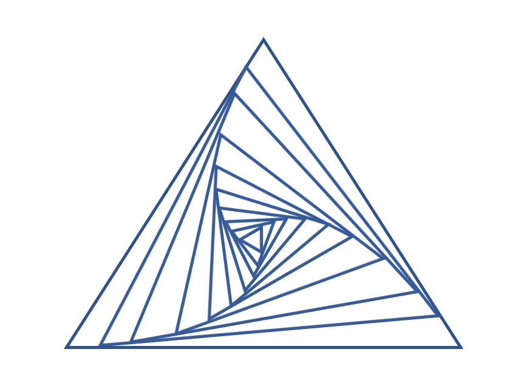

| "ミライ"との対話～30夜物語～ | |
| 福島 毅 | |
| (2018) | |
"ミライ"との対話
～30夜物語～
宇宙思想家 福島 毅 
"ミライ"との対話
～30夜物語～
福島 毅
※この小説は基本フィクションですが、実名にリンクしたものがあります。
目次：
第１章 宇宙の仕組み
第1夜 ファーストコンタクト
第2夜 変わる時間の概念
第3夜 宇宙は誰が創ったの？
第4夜 ワンネスの分離と統合
第5夜 生命はどうやってつくられたの？
第6夜 地球という星の特徴
第7夜 宇宙の２面性とパラドックス
第8夜 魂と死・誕生について
第２章 個人の変容
第9夜 ナンセンスな"しきたり"
第10夜 地球人の意識
第11夜 いわゆる引き寄せの法則
第12夜 幸福を引き寄せる
第13夜 ネガティブ・ポジティブとシナリオ
第14夜 パラドックスを生きる
第15夜 自他愛モデル
第16夜 感情の取り扱い
第17夜 他人は変えられない
第３章 地球の未来
第18夜 赦し
第19夜 地球連邦というプラットフォーム
第20夜 世界平和をどう実現するか
第21夜 未来の法律
第22夜 未来の政治
第23夜 未来の経済
第24夜 未来の働き方
第25夜 未来の医療
第26夜 未来の教育
第27夜 相対化が進む未来
第28夜 ギフトとは何か
第29夜 ミラクルクエスチョン
第30夜 オープンコンタクト
あとがき
第１章 宇宙の仕組み
第1夜 "ファーストコンタクト"
西暦2018年。僕は都内に通う某高校2年生のマコト。そろそろ将来を考える時期だ。世の中、いろいろ便利になっては来ているけど、本当に自分がやりたいことができている人が多いのかがちょっと疑問。世の中は今、ものすごいスピードで変化している気がするし、先も読めないから進路の選択は悩ましい。でも、漠然と「コミュニケーション」に興味を持っているので、人とのコミュニケーションに関わる仕事をしたいなぁという思いはある。
ある日、学校で、オンライン会議システム"Zoom"というものを友人から聞いた。なんでも、スマホなどで簡単にオンラインで顔をみて話せるシステムらしい。しかも、1対1に限らず、100人まで同時におしゃべりができるとか。これはすごい。しかも、オンライン会議ができると同時に、チャットもできるから楽しそう。早速、家で試してみようと思った。
その夜、友人から聞いた手順で、早速Zoomにつないでみた。まずは、テストなので、一人だけで会議室に入り、自分の顔映像がみえるのを確認した。よし、明日からはいろいろな友人を自分の会議室に招いておしゃべりしてみよう。高鳴る気持ちを抑えてPCの画面を閉じようとしたそのときである。
"ピンポーン"
会議室への入室時に鳴る音。
おかしい、いまは誰も招待していないので、この会議室IDは誰も知らないはずである。
入室音は聞こえたのに、通信相手の画面は出てこない。
すると、突然、チャットに日本語が入ってきた。
「こんにちは。ここは2018年の地球であってますか？」
（えっ！ あなた 誰？？）
ちょっと待てよ、何か通信の混信で、変な人が入ってきちゃって、偶然チャットでいたずらの書き込みをしてきているのかもしれない。
マコト：「そうですけど。どちら様ですか？なにか、偶然、間違えて入られました？」
相手：「いえいえ、いまのタイミングで、このチャットに入るように指示を受けているので、手順にしたがってやってみました」
マコト：「誰の指示ですか？ そしてすみません、あなたはどなたでしょうか？」
相手：「そうですよね。にわかには信じられないかもしれないのですが、あなたがたの地球の3千年先の未来からやってき存在です」
マコト：「あの・・・ 冗談だったら、切りますよ。ちょうどZoomも終わろうとおもっていたところですので」
相手：「わかりました。そう考えるのもごもっともです。では、もっと直接的に信じてもらえるような物証をお出ししましょう。3千年先のテクノロジーでは、私たちは星間空間、すなわち銀河系を宇宙船で旅できるようになっていますので、われわれの宇宙船をお見せしましょう。いま、窓から外が見えますか？」
マコト：「はい、いま、見えますけど・・・」
相手：「窓から正面方向上空で3回光を点滅しますよ」
マコト：「あっ！」
そのとき、白く結構強い光、飛行機などでもなく、まるで遠方の灯台の光のようなものが3回光ったのが確認できたのである。これには驚いた。
これは、いたずらにしても度が過ぎている。
夢ならどこかで覚めて自分の笑い話になることだろう。さしあたって、一旦は相手の言っていることを受け入れてみようと考えたのである。
マコト：「わかりました。では、あなたが未来人だとして、名前は何と呼んだらいいのでしょうか？」
相変わらず、カタカタとチャットにあわてて文字を書き込んだ。
相手：「そうですねー。われわれの文明ではもはや個別の名前で呼び合ったりしないので、特にはつけてないのですが、便宜上"ミライ"とでもしておきましょうか？」
マコト：「ミライさんね・・・ はぁ・・ま、わかりやすいですね（苦笑）」
ミライ：「あ、面倒なので、さんづけはいいですよ。あと、私も高校生くらいの年齢なので、お互い敬語なしでいきませんか？」
マコト：（ふぅーん、結構、フレンドリーなかんじなんだな・・・（笑））
「おっけー。じゃあ、ミライって呼んじゃうね。そもそもミライは、なんで、いま、僕とコンタクト取ろうとしたのかな？」
ミライ：「ですよね。今、地球は大きな変革期の最中にあると。でもはっきり言うと、"いまの地球人だけ"で、地球にあるいろんな問題を解決していくのは難しい。そこでいろいろな目に見えないサポートの力も結集させる時期が来ていると・・・そしてそのサポートの一員となるのがわれわれ未来人の役目。表立って動けば警戒する人がいるってこともわかっているので、コミュニケーションにオープンで、柔軟な考え方を取れる君を選んだってわけね」
マコト：「（へぇー、目に見えないサポートってのがよくわからないけど、まぁいいか） でも、何か知らせたいことがあるなら、堂々とその宇宙船とやらで降りてきて、教えてくれればよくない？ こんなZoomチャットを高校生とするという回り道を使わなくてもさぁ（苦笑）」
ミライ：「そうだよね。そう思うのはごもっとも。かつては、そういう威風堂々のアプローチをしたこともある。でも、その方法には、大きな困難が伴うことが経験上わかった」
マコト：「大きな困難とは？」
ミライ：「まず、われわれの存在に対して、それを脅威や恐怖として感じてしまうケース。現代の地球では、未知の相手を前にしたらやられる前にやれという意識が発動するから、攻撃的になる反応が予想される。つまり自分達を守るという防衛反応からの攻撃。逃げるか攻撃するかの二択しかない場合、地球以外に逃げ場は無いから、当然攻撃をしてくる可能性が高いね。でも、もちろんそれはわれわれも望んでいないわけで・・・」
マコト：「確かにそれはあるよね。そういうの映画やSFであるよね。」
ミライ：「では、逆に我々をすごく好意的に受け入れてもらったとしよう。この場合、逆に高度なテクノロジーや未曾有の山積する問題解決の方法を地球人は求めてくるだろう。つまり、私たちに解決を期待し、解決を委ねてしまう状況が想定されるんだ。それは宇宙原則に反する」
マコト：「宇宙原則とは？」
ミライ：「国の自治と同じように、地球の自治は基本、地球人自らがハンドリングしていかなくてはならないということ。これは地球に限らず、惑星を統治する文明を持った星では共通している」
マコト：「なるほど。それで、姿は見せないけど、メッセージを伝える、このような方法を取るというわけか・・・。しかし、僕のような一高校生にメッセージを伝えてもあまり効果はないように思いますけどね。影響力ないし・・・・」
ミライ：「マコトにコンタクトした細かな理由は聞かされてない。ちなみに政治力とか情報発信力がある有名人にコンタクトすればうまくいくのが効果的で早いというものでもないらしいんだよね」
マコト：「えと、じゃあ、このチャットでミライは何を伝えたいのかなぁ」
ミライ：「結構、広範囲のことだよ。一冊の本ができるくらいの」
マコト：「えー そうなの？ なんか荷が重くなってきたなぁ・・・」
ミライ：「まぁ 連載みたいにしてもいいし。のんびりといこう。今日はこのへんで」
マコト：「そうだね。なんか時間がすごく経った気がして疲れたなぁ。あ、これ、PCシャットダウンするけど、今後の継続ってどうやったらいいの？」
ミライ：「今日みたいにひとりでZoom立ち上げたら、そのタイミングでこちらから入っていくから」
マコト：「あ、そうなんだ。簡単でいいね。では、お休みなさい」
まるで夢の中で起きた出来事のように思えたが、とにかく明日、もう一度、同じことが起きるかどうか試してみることとしよう・・・
翌日、学校に登校して、早速昨夜あったことを、友人に伝えようと思った。しかし、それは浅はかであることにすぐに気づいた。いったい誰がこんな話を信じるだろうか？ 「おまえ、疲れてんじゃないのか」と言われるのがおちだ。当面は様子見ということで、日中は普通に過ごすこととしよう。幸い、日中に予期せぬタイミングで、"彼"が現れることはないのだから。さて、今夜も"彼"は、現れるのだろうか？
第2夜 "変わる時間の概念"
よーし。今日もZoomをやってやろうじゃないか。あれが、誰かのいたずらだとしたら、もう連絡は来ないはずだ。こんな大がかりないたずらを僕にしたとしても一銭の得にもならないことがわかっただろうから・・・
昨夜と同じように、Zoomにひとりつなぎ、このミーティングIDは誰にも知らせていたないし、こちらが許可なくしては、入れないような設定にしておいたから、いたずらでいきなりチャットには入れないはず。このシステムを突破してきたら本物だろう・・・
と思ったそのときだった。
"ピンポーン"
Zoomへの参加者が入ってくる合図があり、昨夜のように画面は自分しか映っていない。
そこに、ほどなくしてチャットが書き込まれてきた。
ミライ：「ごきげんよう」
マコト：「・・・ 来た・・・・（ちょっとした沈黙）・・・まず聞きたいんだけど、君が地球の未来人だというのが本当だとして、なんで、未来に生きつつ、現代にも同時にアクセスすることができるのかが知りたいな。それってそもそも矛盾してない？？ タイムマシンはつくれるのか？ という質問にも登場する基本的疑問なんだけど」
ミライ：「ですよね。質問ごもっとも。実は、いまの地球人の概念では、時間というのは、定規の端から端に向かうように、直線的に過去・現在・未来と流れていく、連続したものとして捉えてるよね」
マコト：「えっ！ ちがうわけ？」
ミライ：「日常生活を生きる上では当然、そういう認識なんだけど、もうすこし科学が進歩すると、時間は直線的経過でもないし、時間が連続でもないことが証明されるよ。時間は絶対的なものでなく、もっと相対的」
マコト：「えー そうなの？？ ニュートンもアインシュタインも、そんな話はしてないと思ったけど」
ミライ：「あまり深入りすると混乱すると思うけど、人間の意識に関する理解が進むと同時に時間に対する捉え方も当然進化する。そうなってはじめてこの時間というものが直線的ではないということを理解する段階になる。それを越えないと光速の壁を破る宇宙船も開発できないからね」
マコト：「意識の感覚だと、時間は過去から未来に単に直線的に連続して流れているようにしか感じられないよね。原因があって結果が来るという日常を体験しているだけに」
ミライ：「人間以外の動植物の意識というのは、"今"しかない。常に、"今"、"今"、"今"が瞬間瞬間にやってくる感覚」
マコト：「常に今しかないってのも、なんか倫理の時間に仏教の思想で聞いたことあるけど。まぁ、確かに、動物たちは、過去を悔やんだり、未来を憂えたりしていなさそう。人間はいつも、ああしておけば良かったとか、将来はこんなことがあるかもしれないからといって、今にフォーカスする機会が少ないと言えるかもしれない」
ミライ：「ゾーンに入る、フロー状態など聞いたことがあると思うけど、あれは結構、今にフォーカスしている状態と言っていいね」
マコト：「なるほど。ゾーンに入った時に時間が長く感じるとかいう話を聞いたことがある。時計では一瞬なのに。何かに没頭してときは時間を短く感じたり。幼いころと今では1年の長さが違って感じられたり。意識と時間は関係してそう」
ミライ：「それで、あと時間に関する質問あるかな？」
マコト：「ええと、さっき、"時間って連続した流れとしてとらえてるよね？"という話があったけど、それもまた地球での解釈ってことなの？」
ミライ：「テレビとか映画の原理は知っているよね。あれって連続した映像に見えるけれども、実は1秒に何十もの静止画を次々と見せているだけで、それが目に錯覚をおこさせて連続して見えているだけだよね」
マコト：「あ、確かに。それと時間の関係は？」
ミライ：「実は時間も不連続で、ぶつ切りされた細かな時間ユニットの中では静止している。それが１秒間にはものすごいコマ数で体験しているから、あたかも連続したスムーズな体験のように錯覚している」
マコト：「へぇ、そうなのか・・・」
ミライ：「むしろ宇宙には、連続しているものをみつけることの方が難しい。原子から成り立っている物質もそうで、手に触る物質は滑らかに思えても、原子レベルでみれば電子と原子核の間はすかすかの空間だらけだよ」
マコト：「確かに肌感覚で感じている時間とか空間ていうのが、実際は連続していない、ぶつ切りの世界というのは、なかなか頭では理解しにくいね」
・・・・あ、消えた。
突然、ミライはミーティングルームから退出になって、今夜のミライとの会話はここで終わった。
（なんだ？？突然終わったぞ・・・）
映画の例えは、考え方としてはわかるけど、感覚としては実感がないなー
そうだ。時間の始まり、強いて言えば宇宙の始まりってどうだったのかということを、明日は聞いてみることにしよう・・・・古今東西、古代からテーマになっている謎だからどこかで聞いてみたかった。宗教にも関係してくる深い問いのはずだ。未来人はいったいどう答えるのだろう？今夜は、ぜひこの深い問いを尋ねたいと思った。
第3夜 "宇宙は誰がつくったの？"
ミライとの夜の対話は定番になってきたのと、自分の興味に任せていろいろ質問したくもなってきた。
マコト：「さて、今夜は、とっておきの質問があるのだけど」
ミライ：「何かな？」
マコト：「昨日、時間の話が出たけど、そもそも時間のはじまりとか宇宙のはじまりってどうなっているのかなぁ？
ミライ：「かなり本質的な話題だね。中学や高校で習う宇宙の起源で言うと、"あなたがたが所属している宇宙は、約138億年前に生じた"というものだったと思う。でも、これは、あくまで"今の地球人の技術で観測しうる状況から推定すると"という前提が入るかな。」
マコト：「つまり、それより以前に宇宙があったし、われわれが知っているのとは別の宇宙があるってこと？」
ミライ：「その通りだよ。地球や太陽系、銀河系を含む君たちの宇宙の他にも無数に宇宙はあるけれど、それらの宇宙と交信することは、今の地球の技術ではできない。別宇宙があることについては、多くの科学者が気づいていることで、平行宇宙とか孫宇宙などと呼ばれているよね。結論を言えば時間軸をいくら遡ってさかのぼっても最初の始まりの１点、それはビッグバンよりもさらに最初の世界の始まりのことだけど、それはみつからない。それは昨日述べた時間概念の解釈とも関連している」
マコト：「いわゆる古代神話が示しているように、神様が大地や海や人間の住む世界を作ったような物語が一方であり、一方で宇宙科学が示しているようなビッグバンから始まった宇宙論があるよね。これはどう理解していったらいいの？」
ミライ：「聖書にある"初めに光あり"という記述と、ビッグバン宇宙論の光の１点から始まったという理論に整合性があるように、いろいろと共通点を探していくと面白い。ただし、厳密にはじまりの１点があったというわけではなく、ビッグバンでさえ、永遠につづいてきた宇宙史の１シーンに過ぎない。本当に最初の最初に何があったは、先ほども言ったように３千年先のわれわれでもまだ未解明なことなんだ」
マコト：「・・・（うーむ、想像できなさすぎる）・・・では、われわれの宇宙に限って言えば、これは誰が創ったのかな？やっぱり神様がいて、その一撃で創ったということ？」
ミライ：「これまた本質的な質問だね。例えば、その一撃をしているのは白い髭の杖を持った老人のような神様とは、さすがに思ってないよね？」
マコト「さすがにそれはないね。それにそういう神様がいたとして、じゃあ、その神様は誰が創ったんだろうってなって、議論が堂々めぐりになるのはわかる」
ミライ：「そう。でも、ここでは、神様というものを仮に次のように定義すると、後の理解に役立つ。今の地球では、"大いなるすべて"とか"ワンネス"といった呼び方をしているものだ」
マコト：「大いなるすべて・・・ワンネス・・・・」
ミライ：「そう。いわゆる世界各地の宗教でいうところの、あるいは神話などで出てくるところの神の姿とはまた違ったもの。神話や宗教書などに出てくる神は、日常の事物や人物の延長で考えられているけど、ワンネスはこの宇宙自体がひとつの神様とでもいうべきもの。すべてがつながっており、そのすべて、宇宙の存在自体全体が神様という概念なんだ」
マコト：「司令塔は存在していない感じなのかな。全体すべてが一つの意識体ということ？」
ミライ：「そういう捉え方だね。大海原に司令塔はいない。けど大海原全体存在というのはあるというような感じ」
マコト：「"この最初の一撃を誰が起こしたか？"という問いは、そもそも正しいのかという問いがあるのだけど。宇宙にしても、惑星にしても、生命にしても、何らかの誰かの意志によってつくられたと解釈するのか、そうだとしたらそれは誰かと聞きたくなっちゃう」
ミライ：「物事には原因があるから結果が生じるという日常観から、そういう疑問は当然生じるよね。しかし、われわれ３千年経った智慧からしても、その完全なる究明には至っていない。例えば仏教でいう空のような概念、中心には何かがあるのではなくて何もない、でもそこからすべてが生じるというようなことは、こうした文字を使った理解では困難があるし、"最初の一撃"のプロセスの完全解明はされていないのだよ」
マコト：「われわれの宇宙の最初の一撃の謎については、３千年先でもまだ未解明の深い問いだということがわかった。ところで、神様というと、真善美なる存在を思い浮かべちゃうのだけれど、世の中、結構罪深いことが起きたり、そういうことをしている人たちがいるわけで、これってどう解釈したらいいのかなーって思うことがある」
ミライ：「そうだよね。人の倫理の問題は複雑なので別の機会にするとして、自然現象で観てみよう。例えば火山が噴火するという現象がある。これは短期的には人の命を奪う、これはネガティブなことであり好ましくないと人は捉える。一方で長期的に見るならば、温泉や火山灰がのちの肥料になるなど、人の役には立っている。このことから言えるのは、つまりは事実は中立で存在するけど、その意味付けというものは関係する人によって意味づけがなされていくということなんだ」
誰か司令塔が存在しないけど、全体としてはつながっている・・・何か海を連想するような話だった。となると、われわれ一人一人も大いなるすべての一部であり、神様みたいなものということになる。それにしては不完全すぎないかと思いつつ、ワンネスについては、明日も尋ねてみよう・・・
第4夜 "ワンネスの分離と統合"
マコト：「今日は、昨夜ちらっと出てきた"ワンネス"という考え方をもう少し知りたいと思って・・・」
ミライ：「いいよ。でもその前に一つ重要な概念である、パラドックスについて話したほうがよさそうだ。パラドックスとは、"この宇宙は○○であって、同時に○○でもない"という一見すると大きな矛盾の上にあるという理解なんだよ。それが今後は不可欠になるし、本質をとらえるために重要なんだ。例えば"大いなるすべては完全調和であると同時に、完全調和でない存在でもある"ということ。完全であるがゆえの矛盾は、完全でないという状態を体験していないのでわからないということになる。」
マコト：「うーむ、禅問答みたいだけど、なんとなくわかった。不完全を体験しないと完全性を真に達成したとは言えないというようなことかな？」
ミライ：「進化のステップにおいてそうだと解釈することもできるね。宇宙は永遠に進化していくシステムなので。そこで、"大いなるすべて（ワンネス）"は、"では、不完全で統一されていない状態を体験してみなくては"ということになった」
マコト：「うーん。ワンネスのイメージがつきにくいんだけど、何かに例えてみるとどんな感じかなー？」
ミライ：「そうだね。例えば大いなるすべては、大きな風船みたいなイメージでいこうか。そして大いなるすべてが分裂した状態はミラーボールのような・・・」
マコト：「ミラーボールか。個々の鏡が分かれた魂みたいな感じなんだね」
ミライ：「そう。ミラーボールの鏡（個々の分裂した魂）はそれぞれの角度からその方向をみている。そして個々がそれぞれの存在として意志・意識を内在させてものをみる、体験する。その体験から得たものを再び全体システム（風船）に統合していって、知識・経験を吸収するようなモデル」
マコト：「今は、人間のような意識を持った個々の存在としての人間をイメージしているけれど、これは宇宙にある全物質というか全存在という意味に捉えていいのかな」
ミライ：「当然、そういうことになるよ。もっと意識の研究が進めば、人間だけでない存在（鉱物、植物、動物）にも意識・認識・体験のレベルがあることがわかってくる。ある意味、古代の先住民やシャーマンなどは感覚的にそれを理解していたわけだけど」
マコト：「そうか、では、われわれ個々の魂もそれぞれ別の体験をしているというのは、宇宙で他でもない唯一の存在として、いろいろな体験をしていることに他ならないわけだ」
ミライ：「日本には、"分け御霊"という言葉も残っている。われわれが一人一人の存在が全体という大きな魂の分化したものという考え方は古くから実は定着していたというわけだ」
いろいろなものに意志、意識が宿る。これは日本人の八百万の神々の話と通じるところがあるから、なんとなく理解はできる感じである。では、生命はどうなんだろう？ 生命の起源は？
第5夜 "生命はどうやってつくられたの？"
なるほど、そのワンネス仮説に基づけば、全体性をもった一つのいわば意識みたいなものが分裂して、個々の意識を作り出し、それが生命を生み出しというようなことになるのだけれど、今夜はその生命の起源についてミライに尋ねてみたい。
マコト：「話を宇宙全体に持っていくと複雑そうなので、我々の地球に限ると、生命はどうやって生じて、進化してきたのかな？原始の海のようなところから自然と出てきたようなことが教科書には書いてあった気がするけど」
ミライ：「生命は自らを複製させるような複雑な構造を持っているわけだけど、原始の海のような物質のスープから偶然かきまわされてできたわけではないよ。それは君たちのコンピュータを使って偶然性から生命が誕生する時間経過を計算してみると宇宙の年齢を優に越えてしまうことからもわかっている。つまり、いくらスープをかきまぜたところで、生命は生じないということだ。ではDNAのような複雑構造をもつ生命がどうやって誕生したのか？ 今の地球ではどこまでわかっているかな？」
マコトは、ミライに言われて、早速、目の前のPCでネット検索をしてみた。
マコト：「結局、いまの科学では、生命の起源は宇宙から飛来したという説（パンスペルミア説）が有力であるらしい・・・。うーん、でも、それでは根本解決には至っていないことになるとも。なぜならその生命自体は、どこでどう発生したか？というさらなる疑問が来るから」
ミライ：「実はその答えは、ちょっとシンプルなんだ。ヒントは、もし君たち今の地球人が未知の星に到達できたとして、荒涼とした砂漠で何がしたくなるかということ！」
マコト：「！！そうか！ その環境を使って、実験したくなる」
ミライ：「その考えを延長して考えると、まだ人類が誕生していない太古の地球において、地球外の知的生命（つまりは宇宙人）によってさまざまな実験が行われていた。地球が遺伝子実験のフィールドであったというわけだ」
マコト：「SFみたいな話だけど、ある意味説得力あるなー。人類のテクノロジーの延長を考えると、そのようなことは行いそうだからね」
そうか、地球は一種の遺伝子実験場だったとして、地球という星自体のミッションというか、目的というものは何なのだろうか？ それとも目的などないのだろうか？
第6夜 "地球という星の特徴"
さまざまな生命が地球に生じていまはこのようになっているけれど、他の惑星もみんな同じ進化を果たして、たどるのだろうか？となりの火星や金星だけをみても全く違う環境にあるし、宇宙全体にある惑星にもおそらく未知の様々な形態があることは容易に想像がつく。
マコト：「それぞれが大いなるすべて（ワンネス）の分け御霊という話なんだけど、だとしたら特に地球にいるわれわれ地球人共通の役割とか、ミッションとかそういうのはあるのかな？」
ミライ：「そうだね。これは大きく惑星によって特徴があると言える。宇宙には岩石だけの惑星、植物だけの惑星、数種類の生物で生態系が成り立っている惑星、非常に高度な文明を持ちテレパシーで会話している人類のいる惑星、想像可能なあらゆる星があると思ってもいい。では地球の特徴って何だと思う？」
マコト：「（やっぱりそうだったか、いろいろなパターンの星はあるよな）そうだなー、３千万種以上の生物がいる地球、人間だけ見ても実に様々な部族や国家からなる地球の特徴は多様性といえるんじゃないかな？」
ミライ：「そう、多様性というのは他の惑星にない大きな特徴。これほどいろいろな要素がつまった惑星は宇宙の中でも珍しいと言われている。と同時に、いろんなものに分かれていったということは、分断や分離ということもテーマになっているんだ。良いか悪いかという評価ではなく、とても多様であり、ある意味、分離した物、事、意識、それの坩堝、ごった煮状態が地球だということだね」
マコト：「確かに、多様であるとともに世界は分断されているなぁという感覚は多くの人が共有していると思う。古代から人類は世界平和を望みながらも、なかなかそれが達成されていないことも関係していそう」
ミライ：「それでも、おおまかに言えば、今の地球は分離体験を卒業して、統合の方向へは向かっているよ。どの惑星もある進化段階を迎えると、内部闘争などにエネルギーを使うよりも、自分の境界との外側に意識を向け、交流しようとする。例えば日本が開国していった時、閉じられた国という単位から世界に開いていったよね。同じように、地球という単位から宇宙文明の一員として宇宙に開いていかなければという自覚が生じてくる」
マコ：「自分達に有利な経済圏をつくってそことだけは仲良くし、その他は知らないといった世界的な分離はまだみられるけれど、もしその流れ（全体統合）にあるとすると、人類のみならず地球全体の生態系に、全人類の意識が向くということなんだね。その意識に到達するステップというのがまた気になってきた・・・・」
地球という文明が、多様性を持ったり、分離・分断という課題の解決がミッションでありそうだということがわかってきたところで、そもそもの疑問がまた出てきたのである。神様（ここではワンネス）が、真善美しかない平和で調和的なものを好むなら、なぜそれだけをつくらなかったかという疑問である。
第7夜 "宇宙の2面性とパラドックス"
マコト：「今日はね、ずばり、大いなる矛盾の話から始めてみたいんだよ」
ミライ：「大いなる矛盾とは？」
マコト：「これは前にも一度訪ねたんだけど、例えば、神様（ここではおおいなるすべて＝ワンネスを神様と呼んでおくとする）がいるとして、なぜ、楽園ではなく苦しみとか悪とか、そういうものもわざわざ同時に創っているのか？最初から善とか美しいものだけとか、そういう世界を作っておけば問題ないのに・・・」
ミライ：「なるほど、確かにそれは大きな矛盾に見えるよね。神様が全知全能であり善を求めているとしたら、なぜ、わざわざこうした悪も存在する矛盾に満ちた世界をわざわざ作っているかという疑問・・・」
ミライ：「では、わかりやすく、こんな例え話をしてみよう。大富豪の元で何不自由ない環境で生まれ、恵まれた裕福な暮らしをし、何の苦しみもなく死んでいったある男のストーリー。君はこの映画を観てみたいかな？」
マコト：「いや、単調でぜんぜん面白くなさそう。主人公自身も果たしてそれが幸福だったのかどうか？」
ミライ：「もちろん、毎日が平和で淡々と・・・石や植物しか存在しない・・・そんな惑星がこの広い宇宙にはある。しかし、ここ地球はちょっと特殊。混沌とチャレンジの星なのですよ。そういう星には多様とグラデーションがある。ある性質を見極め、理解を進めるための"2極性"とか"2面性"というものが際立って存在しているんだ」
マコト：「性質を見極めるための、2極性とか2面性？」
ミライ：「そう。表と裏、白と黒、陰と陽、善と悪のようなものね。真昼に豆電球を灯してもそれを光だとか、明るいと感じない。でも真っ暗闇で点灯すれば、"あー光だ"となるよね。つまりコントラストがある性質のことで、このコントラストの存在によって対象物が浮き上がるから、わかりやすく理解されるということがおきる。これは地球で生きていく上で結構、理解するのに便利なエッセンスなんだよ」
マコト：「なるほど。コントラストね。比較対象があるから、ある性質が浮き彫りになるというわけか。例えば善とは何かを学ぶには、悪という対象物があって理解が進むというわけか・・・」
ミライ：「今、豆電球が君自身だとして、真昼には存在価値がわからないけど、夜だったらものすごくその価値がわかったりする。つまり相対的な環境に置かれることで、鏡に映った自分自身をより理解できるようになるというわけさ」
マコト：「ちょっと、わかってきた」
ミライ：「あと物事をより深く理解する方法として、"宇宙のパラドックス性"を受け入れることをおすすめするよ。いわば、2極性とは反対の概念になる。２極性があっちかこっちかに対して、パラドックスはあっちもこっともということ。"そうであって同時にそうでないものを受け入れる"という視点。科学の分野では、例えば光は物質であると同時に波でもあるということがわかっているよね。あるいはエネルギーと質量というのは等価であるけれど、見た目の性質や振る舞いは全く違うよね」
マコト：「あ、それは高校の物理でもちらっと習うね。両方をあわせて統合的に理解するという方法。まだあんまり慣れてないけれど」
マコト：「さきほどのことは物理現象に関することだけど、確かに、社会においてもいろんなことが混沌や矛盾が起きていて、いったい何が正解なんだかわからないということが、しょっちゅうあるし、最近特に増えてきた気がするなー」
ミライ：「今は"正しい"と信じていることも、のちの世になるととんでもない非常識になるということはよくある。昔は奴隷制度が肯定されていたり、隣どうしの藩（県みたいなもの）が生死をかけて争っていたり・・・いま、考えればナンセンスなことだけど」
マコト：「円柱を影絵みたいにして、上から観た人は丸く見えると主張し、横から見た人は長方形だと主張する。でもそれは2次元的な理解でどちらかが正解か結論づけようとしていると矛盾のままで話が平行線だね」
ミライ：「そのとおり。さらに次元があがった見方をして、3次元の中で考えた時、その立体が円柱であることがやがて理解できるようになる。それと似ている。どちらが正解かに迷ったときは、この円柱モデルのように、"統合して理解したら何が浮き上がってくるのか"ということを想像してみる。これからの未来に向けては、この対立から1段、１次元あがった第３極を模索することが多くなるんだ」
マコト：「僕らは学校で、ついどちらが正解かという正解モデルを教育で教わってきた。だから矛盾したことに出くわすと、無意識につい何が真実か、正しいかということを追い求めてしまうし、これが正しいと提示されるものを無批判に受け入れてしまったほうが楽というのもあると思う。いま、科学至上主義や成果市場主義みたいに、黒か白かがはっきりできるものを頼りたがる人が多い気がする」
ミライ：「そうだね。社会が複雑化してきたから、シンプルに示してもらうことが好まれたり、忙しいから手っ取り早く教えてくれることに飛びつく傾向があるのかもしれない。しかし、現実世界はむしろ相矛盾したことが本質。色眼鏡でいったん整理してカテゴリーに分けたり、学問分野で分断してわかった気になっていることも、それは単なる１つのモデルにあてはめるとそう言えるに過ぎない。理想化されたモデルで整理されているにすぎないことを知ることだね。つまり正解というより、その枠の中での暫定解だ。例えばニュートンの力学にしても、相対性理論、量子理論もみな暫定解だから、未来の科学では塗り替えられて更新されていき、終わりがない」
マコト：「暫定解ね。確かに。虹の色の構成を色に言葉をつけて表現してもしきれないように、現実世界も無限のグラデーション、色で構成されているし、解釈も様々にできるということなんだね」
マコト：「いわば、パラドックス自体が宇宙の本質とも言えるんだね。そのように自覚して過ごすと、いろいろな矛盾や論理的に納得いかないことに出くわしても"余裕"を持って対処ができそうな気がしてくるよ」
ミライ：「物事をとらえようとすれば、なにかの枠組みではめて考え、言語や数式を使って理解することが手段になっている。しかし、その瞬間に、その枠に入らないものが当然出てくるわけだ。枠組みをして理解するときには注意すべきことだね。自分がどんな枠の体系を、色眼鏡を使って今は見ているかに自覚的になっておくこと。これは科学の分野でも社会で起きている現象でも、個人間のコミュニケーションでもあちこちで起きていることなんだ。だから宇宙はパラドックス（矛盾）に満ち満ちているといってよい」
ミライ：「こちら側（私）が持っている正解の対局にある不正解を感じたとする。しかし、それはこちら側の枠組みの中での不正解ということ。自分が考える相手方の不正解は、相手にとっての正解ということになるから、双方が指さして正解をかぶせようとしても平行線になる」
マコト：「特に、政治や宗教などではそういうことが起こりやすいよね。パラドックスを前提にした考えを使うと、歩み寄れるのかな」
ミライ：「相手側の主張にある正解は何かを類推するとか、浸る努力をするとか、円柱を3次元で見るように、双方が解釈を発見しようとすると、その先の理解にいきつくことができるんだ。それともう一つ。言語や数式などを使わず、ただただ味わったり感じたり、物事をまるごと感性で受け取る。言語化しなくてもいい。それを多数の人でやったとき、共通のインスピレーションがやってくる。これも未来的なものの理解の方法なんだ」
そうか、これからの世の中を紐解いて理解していく大きなツールが、パラドックスなのか。今日、教わった方法を早速ためしていきたいと思った。さて、僕が感じるパラドックスの一つに生と死がある。どの生物も生を受けてしばらく過ごしたのち例外なく死ぬ。そしてそれをたんたんと繰り返している。種を蒔けばやがて成長して花が咲き実をつけ、老いて土にかえっていく。この繰り返しに意味があるといえばあるのだろうし、無いといえば無い。単調で同じことのこの繰り返しには、何の意味があるのとも問いたくなる。明日は、魂について尋ねてみることにしよう。
第8夜 "魂と死・誕生について"
マコト：「宇宙の仕組みについて、対話してきたけれど、魂の話について聞いてみたいんだよ。ここで言う魂って、よくTシャツなんかで売っている○○魂＝根性みたいなのじゃなくて、人間が死んでも魂が残るのかとか、だったらどこに行くの？というたぐいの話ね」
ミライ：「ああ、わかってるよ（笑）。それではまず、魂のわかりやすい例からね。君は、ペットを飼ったことあるかな？」
マコト：「あるよ。ハムスターを飼っていた時期がある」
ミライ：「動物が寝ている状態で動いていないのと、すでに死んでしまって動いてないのとは、みかけは止まっているだけだけど、違いがわかるかな？」
マコト：「あー それだったら明確にわかるなぁ。ハムスターが死んでしまったとき、魂の抜け殻とはよく言ったものだなぁってくらいわかりやすかったよ。生命エネルギーがもう感じられない感覚があった。」
ミライ：「そう。生命エネルギーのようなものが、すなわち魂といってもいい。ただし、では、有機物でないもの、石とか海とか地球とか、そういうものに魂はないかというと、これも厳密に言うと違ってる。すべての存在が振動しており、何らかのエネルギーを取り入れたり放出はしている。物質そのものがエネルギーということもあるからね。ただ、今回は話をややこしくしないために、人の魂について扱っていこう」
マコト：「多くの人の疑問として、死んだら魂はどうなるのか？ また生まれ変わるのか？といった太古からある問い」
ミライ：「死んだ後のことは、それを体験してみない限りは原理的にはわからないからね。あと生まれ変わりがあったとしても、その前の記憶はとどめていない場合が多いから」
マコト：「最近では、幼児が生まれる前の人生や、生まれてくる前に、魂として地球にやってくるという記憶について語っているケースがあるというので、映画なんかもできている」
ミライ：「そうだね。生まれかわりについての理解やそうした考えの受け入れ体制ができてきたから、こういう情報もオープンになってきた。地球の人口が爆発的に増えていることからわかるように、いま地球外の魂が地球に転生するということが多い。そういう形での宇宙交流が今まさに、行われつつあるのだ」
マコト：「へえー 生まれ変わりは地球だけじゃなくて宇宙規模に起きているのか・・・」
ミライ：「まず、魂のモデルとして、魂自体を"ある種のキャラクター（特徴的な性質）を持つエネルギーの塊"であると仮定しよう。その魂自体は、ある種、自由意志を持って活動している。自分の魂の成長のための目的を持ち、それに相応しい時代・場所・環境・両親を選んで生まれてくる。大まかに、この人生ではこんなミッションというように・・・」
マコト：「おっきな地図というか、人生の青写真のようなものだね。よく、生まれてくる環境・親・時代は選べないと聞くけど、この論だと逆なんだね。むしろ大局的にはもっとも自分の成長に関わるように自動調整されてくると・・・」
ミライ：「そう。人生はいわば舞台装置みたいなものだね。演じる主役の本人の魂とそれを取り囲む俳優たちと舞台が用意されている。で、そこで自分の人生のミッションを遂行する。ちょっとだけ生まれたて短い時間だけど地球にちょっと立ち寄るような短期滞在型の魂もあれば、がっつり地球にコミットして長寿を全うする魂もある」
マコト：「地球では一般的に長い寿命が善しとされていて、例えば生まれてすぐ死んでしまう赤ちゃんなどは、両親によって深い悲しみを残したりするよね」
ミライ：「魂に対する正しい理解があれば、もっと違う見地でこのことを理解できる。結果的に短命であっても、それはその魂の選択であったのだから、その悲しみを親が引きずらなくてもいい。ある魂がまっとうする人生をポジティブかネガティブかという２極で理解するのではなく、それがその魂にとって何を意味し、魂の成長とどうつながるかという大局観を今後の地球人は持つことになる。さきほどの赤ちゃんの例でいえば、ちょっと地球に観光旅行に来て、ああこんなとこだったんだね、地球はこんなふうだったんだということでまた帰って行ったと解釈できる」
マコト：「魂がいわば生まれ変わって循環していくという考えでは、人の死さえも、あの世での誕生ということになり、あの世とこの世で循環しているということになるわけか・・・」
ミライ：「一つの魂が寿命を迎えて、まだミッションがやり残っているとしたら、また、その人生で新たな課題が見えたとしたら、次の生でまたそれを魂の成長の課題として取り組めばいいだけということになるね」
マコト：「そうか。死ぬときに後悔する生き方はしたくないと思っているけど、もしこの人生でやり遂げられなかった課題があったとしても、その宿題は次以降の新たに生を受ける人生でチャレンジできるというわけだね。では、"大いなるすべて"と個々の魂の関係というのは、どうなってるの？」
ミライ：「それ重要だね。これもわかりやすいモデルで説明しようか。手のひらを出してみよう。手のひらの5本の指の1本1本が個々の魂で、手のひら全体がワンネスというモデルね。このモデルによれば、個々の指はそれぞれ自由意志を持って動くことができるけど、全体のワンネス（手のひら）にもつながっているひとつの生命体とみることもできる」
マコト：「個々の意志がありながら、全体もつながっているというわけだね」
ミライ：「死と誕生は、魂（生命エネルギー）の次元では、おのおのの世界が隣接している２つの部屋を行き来しているのに過ぎない。そのように考えるとき、こちら側のこの世で体験していることは現実であると同時に、あの世からみると幻想であるともいえる」
ミライ：「それとともに、意志力や言霊のようなものの持つ力も同時に知っておかなければならないよ。例えばの話、河原で拾ったひとつのなんの変哲もない石があったとする。これに限りない霊力がやどると多くの人が信じ込んだ時に、その石は霊力のパワーを本当に持ってしまう。これが人間の意志力による"フォース"のようなものだ」
マコト：「なるほど。宗教的な信仰というのは、そういうところを発端に発展していくということもあるんだね」
宇宙や地球の仕組みの話は、とても大きなスケールのことだったり、自分一人では検証できないことが多い。だからここまで聞いてきて、宇宙、生命、魂、このあたりの理解はだいぶ自分なりには、すっきりしてきた感がある。地球の方向性というものが大筋ながら見えてくると希望が持ててきたし、地球の課題もそれなりに意味があるのだと思えるようになった。
それとともにミライに聞いてみたくなったのは、知らず知らずに触れている社会習慣や個人の考え方といった、もっと小さな単位のこと。そこを理解できれば、いままでの宇宙全体の大枠の話とのつながりが見えてきそうな気がするのだ。
第２章 個人の変容
ミライがZoomオンラインにやってくるのは、だいたい午後９時。そこから短いときで数分、長いときで、じっくりめのやり取りが１時間くらい続くことがある。通信は途中で急に途切れる。途切れたところでおしまい。でもいつもオンラインが終わるとき、何か次の問いを想起させる。
地球は確かにいろいろな意味で変革の時を迎えていると思うけど、では個人では何をしていったらいいのだろう。その気になる部分をミライに聞いてみようと思う。
第9夜 ナンセンスな"しきたり"
マコト：「宇宙の話から、ちょっと身近な生活とか個人の生き方・考え方の話をちょっとしたいんだ。こないだ相撲の場で、土俵の女人禁制っていう話があって、土俵上で挨拶していた人が急に倒れた人がいて、そのとき救命しようと女性が土俵にあがったら、場内に"女性は土俵から降りて"とアナウンスされたことが問題になっていたよ。相撲は豊穣の女神への奉納だから、女性が土俵に入ると嫉妬するというような理屈だったと思う」
ミライ：「例えば、神様を品格があり、受容・愛にあふれた存在であると仮定してみよう。そういった神様が自分への忠誠や嫉妬と人命のどちらを尊重すると思うかな？」
マコト：「それは当然、命ってことになるよね」
ミライ：「話を変えて、ではそういう神様の性格を想定したときに、お布施や賽銭の額が高いほど、願いが叶うというようなことも起こるかな？ 現実次元でお金を使うことができない神様・仏様が、拝金主義かどうかよく考えて（笑）」
マコト：「確かに。よく考えてみるとナンセンスな風習や習慣というのは、この世にはたくさんありそう」
ミライ：「目に見えない世界のことを、"人間の想像で勝手に解釈"して、こうではないだろうかという仮説を立て、それに基づいた習慣がそのまま今に残ってしまっていることがよくある。かつては生け贄の儀式のような残酷なものもね。誰かが始めた根拠のない縁起のようなものが信じられて継続しているということも多い」
マコト：「そもそもナンセンスな風習や習慣て、なんで生まれてきたんだろう？」
ミライ：「もちろん風習や習慣の中には役立つ先人の知恵として、細かな理屈を説明せずに誰かが考えて導入されたものもある。しかし、人々を統制・統率するとか、組織を大きくするためとか、組織の保身や防衛とか、そういう理由で恣意的に設けられた慣習も多く残っているよ。いちいち誰かが細かな命令をしなくてもいいように、"掟を定めて守らせる"というようなこと、"○○しないとXXになる"的な恐怖によって煽ったものもそうだね」
マコト：「ナンセンスで意味がない慣習を見極める方法ってあるのかな？」
ミライ：「基本は、"自分の思考を止めない"ということだろうね。いま残っている常識や慣習を一旦は疑ってみるということ。本当にそれは現代の社会や生活に必要があるものかどうか？こうした、いわば"思考の再起動"は、個人または組織単位で今後、一層問われてくることになるよ」
マコト：「確かに、さきほどまで見てきた例のように、自分に冷静に問い合わせてみると矛盾や滑稽さに気づけるようになるね」
ミライ：「あと直感を使うことも大事。なんとなく、しっくりこないという感覚も大事にする」
ミライ：「ちょっと直感的にナンセンスなしきたりがあったとしたら、さっきのように"品格・受容力・智慧・愛ある神様がいるとして、そうした神様がそれを考えつき、それを望んでいるか？"という問いもパワフルだよ」
マコト：「なるほどね。自分の中にそうした神様を住まわせる感覚だね。だれかの利益のみを代表させるような慣習がなくなっていく条件は、しっかり自分で思考することと直感を使うこと。これは肝に銘じておきたいな」
"すでにこう決まっているのだから"と言われてもしっくりこないことに対して、もし自分なりに意味づけられるとしたら継続すればいいし、そうでなければ止める、避ける、逃げる（笑）、いろいろ対処できそう。では、もっと視野を広くとって、地球人の意識というのはどうなるのだろう？ 何か共通点があるのかな？ 明日はそれについて尋ねてみたい。
第10夜 地球人の意識
マコト：「地球という大きなユニットで見た場合、人々（つまり地球人）の意識や考えというのは、どういった方向に今後進んでいくのかなぁ」
ミライ：「そうだね。まずは、これからの地球社会は"分離から統合へ"というのがキーワードになる。ここでちょっと人間（地球人）の文明という点で振り返ってみよう。最初は動物の群れのように、あるいはかつての王国のように階層をつくりピラミッド構造で社会を統治していた時代があった。もちろん現代社会でもその構造がすべてなくなったわけではないけどね。」
マコト：「奴隷が当たり前、正当化された時代から、今は生きている個々人の人権といったことに意識が向く世の中になったというのは人類の進化なんだろうね。」
ミライ：「ピラミッド構造のあと現れたのが個人主義。個人の権利や幸せを中心に考えられた民主主義が立ち上がった。しかし、この個人主義も、それが行き過ぎれば、一部の資本家や社会ルールをつくる側のエゴによって、ルールをつくった側の利益を優先させるようないびつな構造ができてしまうこともよくある。そうなってくると、反動として個人の尊厳とともに、地球全体の生態系や環境というものにも配慮した製品とかサービスなどが増えてくる。企業活動でも組織活動でもいわば高い倫理性が問われる時代になってくるということ」
マコト：「確かに、持続可能性とか多様性とかいう言葉をよく聞くようになった。これも地球の全体性を意識して暮らす人が増えてきたということなんだろうな」
ミライ：「それぞれの個人が自分で定義した生き方、幸せの追求、表現の仕方を自由にできるようになってくる。このことは逆に、他人や社会に従属的に生きている人にとっては生きにづらい世の中になるともいえるね。そしてこうした自己表現の場面では正直さも要求されるので、嘘をついたり欺いたり不正したりということができない世の中になっていくんだ。嘘や欺瞞で生きようとすれば、自分を窮地に追い込むような環境を自らがつくってしまい、苦しんでいくことなるよ」
マコト：「個人の権利ばかりが主張されると、公共のことの合意がなかなか取れなくなる。ここはバランスなんだろうな・・・個人も社会もハッピーでいられる在り方がいいな・・」
ミライ：「今後は地球人類全体、広くは地球の生態系（動植物から微生物まで）など環境全体を視野に入れた幸福ということを人間は意識していくようになる。例えばエクアドルの憲法などでも生態系を含めた自然との調査について触れているよ。進化してきた脳を持つ生物がいる惑星では、最終的にはその方向、つまり惑星全体の生態系という発想に行きつく」
僕はネットで調べてみた。確かに、エクアドルの憲法の第275条においても、開発は"良き生き方"の実現を保証するためと位置づけられていて、「『良き生き方』は、人、コミュニティ、民族が、通文化性、多様性への尊重、自然との調和的共存に基づき、権利を享受し、責任を果たすことを必要とする」とあった。
マコト：「確かに、所有から共有ということを若い人でも意識している人が多くなった気がするし、より製品も機能が同じなら、環境により配慮している製品を選ぶ人が増えてきたよ」
ミライ：「そう、そしてそうした人の割合が増えていく。"個とともに全体性にも目が配られる世界観"ということだ。人生で最終的に何を達成したいかのか？という質問を繰り返せば、結局のところ、自分の幸せだけでなく、周りの人の幸せ、さらに拡大して地球全体の幸せの実現という話になっていくからね」
マコト：「そうした意識が基本となるのは、希望だなぁ」
ミライ：「ただし、そういった意識の目覚めのタイミングは、世界一斉に同じタイミングというわけではないよ。個々の花の咲くタイミングが微妙にずれるように、個々人の意識変化には当然、早い、遅いの時間差がある。でも、だいたい桜であれば春に咲くといったような、大まかな集団としての目覚めの時期に来ているのが今の地球であるといえる」
マコト：「それでそんな意識の人の人数が、ある程度に達したとき、何がおきるのだろう？」
ミライ：「そうだね、大きな事件としては、宇宙にいる同朋が、地球を統一種族として公的に交信・交流する日がやってくる」
マコト：「WAO！ その頃には、外からやってくる宇宙人に対して敵対的な対応にはなってないんだろうね。」
ミライ：「攻撃は"恐れ"による対応に他ならないから。自分の意識がしっかり確立されてくると、そもそも攻撃的な何かを波動的にひきつけなくなる」
マコト：「波動というと・・・いわゆる、引き寄せの法則とかいうもののことかな？」
"引き寄せの法則"というのは、気になるワードではあったけど、ちゃんとした話を聞いた記憶がない。引き寄せの法則というと、自己啓発とかスピリチュアルというイメージがあるけど、実際どうなんだろう。これは宇宙的視野からみてどうなのかが気になっているので、明晩、聞いてみることにした。
第11夜 いわゆる引き寄せの法則
マコト：「"類は友を呼ぶ"ということわざを知っているけど、引き寄せの法則というのは本当にあるのかな」
ミライ：「この言葉は、ちょっと誤解されている部分があるね。例えば、"強く願い念じれば願いは、必ず叶う" というようなものね」
マコト：「よく聞くよね。教育の場面なんかでも。夢を持ち、努力すれば必ず叶う的なやつね」
ミライ：「生きている間に、例えば100ｍを1秒で走ることを望んだとして実現できますか？空を飛びたいと念じたらすぐに飛べますか？」
マコト：「あーそれ、もう一瞬で無理だってわかるね」
ミライ：「逆に目の前のペンを取ることは造作もない。100％すぐできる行為だと信じられるから。この法則は、人間の想像力で理解できない範疇のことは実現しないし、逆に言うと、潜在意識でも顕在意識でも信じられることというのは、達成も楽だということを言っているよ。考え方や信念が個人や集団の中で変れば実現の可能性もまた変わることを言っている」
マコト：「科学的にはどう理解したらいいのだろう？」
ミライ：「これは、"共振"という考えを使うと理解しやすいよ。例えば音叉を鳴らして、その近くに同じ周波数の音叉を持ってくると音叉が共鳴するあれね。人の精神についても同様であり、同じ周波数の人を共振させやすくなる」
マコト：「でもさ、たまにすごくいやーな、相性があわない奴が目の前に現れたり、望んでいないのに、事故が起きたり、病気になったりってあるじゃない？あれも共振なの？」
ミライ：「確かにそこはわかりにくいよね。実は望んでいることが、どのレベルで起きているかということが重要。顕在意識で望んでいる・望んでいないというのはいわば氷山の一角なんだ。例えば先の例でいえば、"自分にとっていやな奴が現れる"というのは、潜在意識では自分が成長するチャンスのキーマンとしてこのタイミングでその人を引き寄せているとも言えるわけ。また他の例でいえば、自分に休息が必要なことが明らかなときに、体からのメッセージが繰り返し本人に発せられているのに気づかずに、休息という行動に結びつかない場合、強制休息として病気やケガを引き寄せる場合などもある。同質のものだけが共振して自分の周りには似た者同士の人しかいなくなるというご都合主義じゃないんだ」
マコト：「表に見える現象だけに注目しないということなんだね」
ミライ：「自分が本当に必要としていること、欲していること、天命、使命と感じていることが自分でありありと感じられ、それに向かっての行動が取れるとしたら、実は達成はたやすいことになる。でも、本質的な自己の成長の望みからは離れた欲求に基づくものを引き寄せていくことは難しい。引き寄せられていないということは、逆に、潜在意識では実は望んでいないということになる」
ミライ：「あと、本質的には自分は何を望んでいるのかということをリマインド（心で確認）することは、先が見えないこの時代には、とても大事なスキルになるよ」
マコト：「というと？」
ミライ：「例えば、"単にお金持ちになることを引き寄せたい"という望みは本質的とは言えない。手段が目的かされているだけだから。では、そのお金が入ったとして、それで何を実現したいのか、そのことがあなたにとってどう大切で、使命とどう関連しているのかというところまでの思いを持っておくということね」
マコト：「本質的な目的のところなんだね」
ミライ：「ただしその時、入ってくるのはお金という形ではないかもしれない。賢い知識かもしれないし、大切な人脈だったり、チャンスだったりというふうに形が変わる可能性も当然ある」
ミライ：「あと、執着と引き寄せについても、最後に注意をしておこう」
マコト：「執着と引き寄せ・・・」
ミライ：「例えば"私はお金持ちとかに興味ないし、お金に執着しない生き方をやめたの"というようなことをよく口にする人がいるとする。その人は、実はお金というものにフォーカスがあたっているため、お金に関する課題やトラブルというものを誘発してしまう」
マコト：「よく、苦しみや悲しみを体験しなければ、それに向けて必死の努力をしないと手に入らないというような話を聞くけど、それは引き寄せと関連させるとどうなのだろう？」
ミライ：「"そういう体験をしないとそうならない"という選択自体も、宇宙的には許されるから、その望む現実を本人が引き寄せる（宇宙が提供する）ことになるね。いや、そうじゃないんだ、苦しみや悲しみやそれに時間を費やさずに自分のやりたいことを達成したいといいつつも、そういう現実になっていかない場合は、潜在意識の自分は実は苦しみ・悲しみを体験してみたい、傷が癒されなければ先に行ってはいけないと願っているのではないかとセルフチェックするのをおすすめするよ」
マコト：「なるほど。ではどうしたらいいの？ どうしたらその執着を手放せるの？」
ミライ：「自分がしていて心地いいこと、執着を忘れさせてくれるようなことに時間やエネルギーを使うとようにするといいよ。そして今を生きること。そうすると自ずと結果がついてくる。自分の本質が望んだことが目の前に現れやすくなるんだ」
自分が潜在意識を含めて望んでいる世界は何か、実現したい世界は何かを明確に描くことが大事だということはわかってきた。では、幸福についても同じことが言えるのではないか？幸福を引き寄せるためには、何をしたら良いのだろうか？
第12夜 幸福を引き寄せる
マコト：「昨夜は引き寄せについて改めて知ったけど、今夜は幸福について尋ねてみたいんだよね。なにせ、いろいろなところで常に評価される世の中なので、何が幸福なのかが実はよくわからないんだ。勝手に落ち込んだり、自分て何のために生きているのかと思い悩むことが多いし、これは自分だけでなくて同世代の友人もよく言っている」
ミライ：「確かに学校から始まって、企業、組織のあらゆるところで、見える形にしろ、見えない形にしろ、評価というものがつきまというのが今の社会だよね。でもその評価基準も君自身が創ったものでなく、その社会情勢やシステムあるいは世間がつくっている曖昧なものだったりする。そしてその評価を気にしすぎてたり、その自分の外部が定めた評価自体が高いことイコール幸せや自分への肯定と誤解してしまったり、その逆に評価が低いことが直接その人の不幸や自己否定、苦しみに繋がっていく」
マコト：「そうそう。ところで"評価と苦しみの関係"というのをもう少し知りたい」
ミライ：「たいがい、学校も社会も含めて、"評価が低い、目標達成がされない"のは自分の努力不足のせいであるというような考え方になってしまっていることが多いよね。これを仮に"ミッション達成型社会における評価第一主義"と名付けておこう。つまりミッション達成に到達していないのは自分あるいは組織の努力不足の一点というふうに歪曲されてしまっている」
ミライ：「こうしたフレームだとその分野のトップ以外はすべてが負け組で、幸福にはなれないという構造。金メダルを取る人以外はここでは負け組だ。個人にしろ組織にしろ、ある評価の基準にすべて到達しようとすれば、それはそもそも不可能というもの。健全な処理量を越えて体も精神も酷使するサイクルに知らず知らずに入ってしまう。そして消耗する。生き生きした個人でも組織でもなくなっていく。他人や他組織に比べてそれ以上にやらないと成果が出せないというようなスパイラルに陥っていることにさえ気づけなくなる」
マコト：「グローバルに競争が今のように激しくなると、どうやって効率よく稼ぐか、どこがシェアを取るか、どこが業界の標準を抑えるかという話になってくる。そこに行けないのは、努力不足なのだと。そこに所属する側が勝者・・・勝者になっていないと生き残れないという感覚」
ミライ：「あまたの活動がそもそも何のためにあるのかといえば、本来は人類の幸福だったり、地球上の全生命の存在・尊重、調和的な在り方ということ。これをやがては全人類が共有していくわけなんだけど、そうしたパラダイムに地球人全体が一足飛びというわけにはいかない。そしてこれは、地球文明の中の話なので他の宇宙文明が介入して操作してはいけないことになっている」
マコト：「うーむ。確かにミッションが達成されたかとか、成果が目標に達していたかということにフォーカスされすぎているよね。そして日々、誰か、何かとの比較の中で生きてしまって一喜一憂している。そのことがぼくらの生き方や暮らし、幸福にどう関係してるのか、そこまで考えが至っていない気がする」
ミライ：「ある誰かや社会が用意した"標準の幸せのポジション"や、"典型的な幸せとはこうあるべき"というものが提示され、それをみんなが盲目的に信じ込んでしまうとしよう。何がおきるかな？」
マコト：「想定されたその器にはまらないとき、自分は不幸だということを自らレッテルを貼ることになってしまうね。それこそ不幸を自分で生産していくということになる気がする。幸せの形はいろいろ多様にあっていい。そのへんにいる昆虫の生態をみるだけでも楽しいという人もいるし、そこそこ健康に暮らせていれば幸福を感じるというのも自然のことだし」
ミライ：「自分が何らかの罪悪感を持つとき、幸福でない感覚を感じるとき、何かの暗黙の基準や器を自分が知らず知らずに信じてはめていて、あるいはそれにあてはめたがっている、そして常に他者と比較している可能性がある。だから、それをセルフチェックすることをおすすめするね」
マコト：「ああ、例えば"女性は結婚して子ども産むことが幸福"みたいな幸せのテンプレートをみんなが共有しなくてもいい。現代は多様に生きられる時代だから」
ミライ：「そう。これからは各個人が自分の中に、自分が定義する幸福というものを持つようになる。もちろん、その定義は人生の中で何度も変わっていくこともある。自分の生き方、本質の自分というものは、自分にしっくりいくものをその都度選択していいんだよ。未来の地球では、納得感のある幸福を各個人が得られる世界になる」
マコト：「ありがとう。それは朗報だなぁ。そんな世界で暮らしてみたいよ。そのための第１歩が、自分の幸福とは何かをみつめる、再定義してみるということなんだね」
ミライ：「あと、ここまでで評価とか比較ということが出てきたけど、評価や他者との比較は自分の立ち位置をしるなどのために必要なことがある。でもそれに勝ったか負けたか、そこに到達できたかできないかということ自体が目的化されてしまうとおかしなことになるということ。その違いをわきまえることが大事だよ」
確かに、自分の幸せは自分で定義してよい自由がある。ただ、どうしてもその過程で、物事はポジティブに捉えないと、なかなか楽観的にはなれないなーという自分もいるのは確か。ポジティブとネガティブについては、どうなんだろう？
やはりいつもポジティブ思考をめざすべきなのだろうか？
第13夜 ネガティブ・ポジティブとシナリオ
マコト：「ポジティブシンキングという言葉があるけれど、ネガティブよりはポジティブの方がいいのかな？そもそもポジティブ、ネガティブとは何かというのもあるけど」
ミライ：「ポジとネガを考える場合、わかりやすい例として光と影の話をしておこう。光が届くところに障害物を置けば影ができるけど、その影の濃さは、当たる光の強さや周囲の明るさによって無限のグラデーションがあるよね。これと同じで、どこまでがネガティブでどこからがポジティブというのは一概に言えないというのが本質なんだ。完全なる悪人も完全なる善人も存在しない」
マコト：「うん、うん」
ミライ：「さて、でもそれだと話がここで終わるので、ここでは便宜上、大雑把に、悲しみ、憎しみ、苦痛、不安、怒りの体験などを仮にネガティブグループ、喜び、感謝、幸福な気持ち、安心な状態などをポジティブグループと分類しておくことにしよう」
マコト：「仮に分類されているとわかりやすいね」
ミライ：「それでもって、"ポジティブが良くて目指す方向であり、ネガティブが悪くて避ける方向"としてしまう解釈は単純すぎる。それよりも、ポジティブにしろネガティブにしろ、体験や感情には理由や必要性があるから出てきているということをまずは確認しておく。起きていることは中立だけど、捉え方によってはネガティブなことでもポジティブに逆転して解釈が可能ということがある。」
マコト：「具体的には？」
ミライ：「例えば、小さいときに両親にとても厳しく育てられ、遊びたい時期に我慢させられたという体験を持つA君がいたとしよう。A君にとっては過去がつらいネガティブな思い出だったと解釈にもなるし、その厳しい体験が元でいろいろなスキルが身につき、大人になった自分がいろいろな能力を発揮できたとすると、それは現在を支えるポジティブな体験だったということもできる」
マコト：「なるほど。解釈次第で過去の経験が塗り替えられるというわけか」
ミライ：「これは、ネガティブ体験もポジティブ体験として解釈可能なのだから、無理やりそうしてくれと頼んでいるわけではないよ」
マコト：「（笑）そこはわかってるよ」
ミライ：「ネガティブには分裂・分離という性質が関係している。そしてネガティブは必要があって出てくるので、それ向き合う必要がある場合、避けていても同じようなことが繰り返し自分の身に起きることがある。そのような時はその意味を成長へのチャンスであると解釈し、なんらかのアクションを正面からとっていく必要があるという信号なのだ。見て見ぬふりをしたりするとかえってことが大きくなっていく」
マコト：「でも、世の中、ニュースなどで伝えられているようなネガティブなことはすごく多いから、そのすべてに自分がコミットしてはいられないよね」
ミライ：「もちろん。それは自分の直感が発達するにつれ、回避すべきもの、当事者として対応しなくてもいいもの、対応すべきものなどの区別がわかってくる」
マコト：「では、ポジティブと生きていくこととはどんな関係があるの？」
ミライ：「基本、この世で生き抜いていくことは、人生という舞台装置の演劇くらいに考えて、どんなことが起きたとしてもあまり深刻にならないことだね。そして他者への祝福とか応援とか勇気づけとか、こうしたことも広い意味でポジティブ姿勢と言える。俯瞰した楽観やポジティブはポジティブな波動を呼び、結果としてはポジティブを生み出す。争いや分断・苦悩・苦痛などがもういらないと思うなら、人生はその方向にもっていくことができる。これは宗教ではなくて物理的な原理なんだ」
マコト：「人間の思い込みは強いから、"とはいえ、そんな簡単じゃないでしょう"と思えば、簡単じゃない事実が現れるということだよね」
ミライ：「そういうことになるね。どんなシナリオを人類が求めているか？それを明確に打ち出していく時期に来ているといえるね。みんなが自分でこんな世界にしたい、こんな人生にしたいというビジョンを考えるべき時が。そして人は、おおまかな人生ミッションは決めて生まれてくるけど、細部やそこに至るルートはいろいろ自分で開拓できる余地があるよ」
ミライ：「人生を山登りにたとえてみると、自分は山の頂上にのぼって雄大な景色を見るような人生をおくるというミッションがあったとき、どのくらいの標高の山かどんなルートで登るかは、選択のバリエーションがあるということ」
地球はネガティブな問題が満載だ。この文明はあと100年持たないという学者もいる。でも、ミライは３千年先から確かに何かを伝えに来ている。できることをやっていこう。そして将来の地球のことは楽観的に考えつつも、目前のネガティブなことも目をそらさずにできることをしていこう。ネガティブとポジティブの狭間に身をおきながら、やじろうべえのように生きてみよう。やじろべえで思い出した。そう、あのパラドックスの話だ。パラドックスの話は個人の変容とどう関わっているのだろう？
第14夜 パラドックスを生きる
Zoomチャットが始まるとき、こちらからあえて問いを出さなくても、ミライの方から察して話始めることも多い。昨夜気になっていた、パラドックスの話が早速、ミライから出てきてスタートした。
ミライ：「地球で生きることは、パラドックスの世界を生身のからだで体験する場、そのものとも言える。これと個人の体験について話そう」
マコト：「どういうこと？」
ミライ：「例えば、せっかちとチャレンジャー、びびりと慎重、おせっかいと面倒見が良いこと、頑固とブレない姿勢など、時と場合、あるいは相手によって短所と捉えられたり、長所と捉えれたりするよね。これらも一種のパラドックスであるとも言える」
マコト：「なるほど。それはまた物事の加減という意味でもあるね。例えば子育てなら、干渉しすぎれば返って本人の自立のためにならなかったり。かといって、無視すればそれはまた教育的によくなかったり。適度な距離感をみつけながら生きていくということだね」
ミライ：「試しながら、自分の納得感や心地よさを知る。と同時に、相手の心地よさや納得感も知るということ。それは相手がいるから、相手が鏡になるから自分で初めて自覚できるということもあるね」
マコト：「何が正解かというのも相対的だということだね。言わば矛盾で定まらない世界の中で泳いでいるのが人間」
ミライ：「そもそもが反対側に立てば反対側からみた別の風景が見えるわけだからね」
マコト：「"相手は自分の鏡である"という諺は知っていたけど、今夜はその具体例を見た気がするね」
ミライ：「神社に鏡があるよね。かがみから、我（が）を取ったらかみ（神）になるという言い伝えの通りだよ。現実はあなたを反映するもの。そして鏡に映っているあなた自身が本来は神、その分け御霊。わかりやすい象徴物だね。実生活においては、自分の身のまわりの人や社会が君の鏡になっていつもいろいろなことを見せてくれている」
やじろべえのように、一方に触れれば、また反動でもう一方に触れ返す。人生はその繰り返しなのかもしれない。またそういう気づきをしたいから地球に生まれてきたのかもしれない。だとしたら「地球」という舞台装置をうまく使おうではないか。相手やまわりをとりまく環境というものは自分を写す鏡という話があったけど、自分と相手という場合、やはり相手を尊重することが善なのだろうか？ 一見、そのほうが精神性は高いように思うけど、日本人の場合、相手への配慮とか、空気を読みすぎて神経をすり減らしている人が最近多いような気がして気になっている。
第15夜 自他愛モデル
マコト：「最近の悩みは、自分の正直さをどこまで出すかということなんだよね。やりたくないことをやりたくないと主張すれば相手に負担がかかったり。自分の正直さを表現するとき、ときに人を傷つけてしまったり、まわりに混乱をもたらすこともある。でも一方で自分の正しさや主張したいことを我慢してひたすら耐えていればいいか、その方が大人だからそうすべきかというと、それも違うと思う。どこでバランスをとったらいいかがわからなくなるときがあるんだ・・・・」
ミライ：「例えばの例だけど、街中で絵を突然絵を描きたくなったから、誰の所有物かはお構いなくアートと称して壁に絵を描く。あるいはオーケストラのコンサートを聴いている最中に、突然叫んで自分も参加したくなったからと大声を出すとしよう。こうした行為も魂の発露だから多様性として認めるべき？ これ、アートなんだろうか？」
マコト：「それはちょっと違和感あるね。自己の自由な表現とわがまま（エゴ）がごっちゃになっている印象を受けるよ。」
ミライ：「では、ある人物が、その人に自分の正解・正当性を理解してほしくて、時に暴力を使うという場合はどうかな？単に肉体的に苦痛を与えるという暴力以外にも、精神的な暴力性というのもあるよね」
マコト：「暴力は論外だよね。時代が逆行しているよ」
ミライ：「では、"絶対に人を傷つけてはならない"という掟を厳密に人に課したら、人はどうなるのだろう？」
マコト：「おそらく、他人に対して何の意見や影響も及ぼさないように黙ってしまうしかなくなるかもしれないよね。通常、自分は正しさのもとで発言や行動をしたのだけれど、それが思わず人を傷つけるということは常にありえるからね」
ミライ：「そこのバランスをとっていくのが、実は現代人の課題でもあるんだ。バランス感覚の持ち方。では、未来の地球では、どんな風に進化するかをお伝えしよう。これをここでは、"自他愛モデル"と表現することとしよう」
マコト：「"自他愛モデル"？」
ミライ：「そう。簡単に言えば、自分を尊重するのと他者を尊重するのを同時に調和的にバランスよくやるということ。これにはある種のレベルがあって、例えば直線定規みたいなものをイメージしてほしい。左端は自分のみが優先されるエゴの世界。右端は自分を完全に犠牲にし、自分を押し殺した世界。自他愛モデルでは、その中庸を考えていく」
マコト：「"自他愛モデル"は、いつもその定規の真ん中にあるということなの？」
ミライ：「いや、あるときは自分寄りになるだろうし、あるときは他者寄りになることだろう。時と場合によってその位置は刻々と変わる。しかし基本の観念としては、自分尊重とともに他人尊重、そしてそのバランスを意識した生き方ということになるよ」
ミライ：「自他愛モデルは、人間の何段階かの在り方を提唱する。第０レベルは、自分中心で、したいときにしたいことだけを追求する生き方モデル。第０レベルは、人間でいうところの赤ちゃんのレベル。他者への配慮や影響は全く考えないで、自己利益のためのみで行動するというレベル。次の第１レベルは、自分と他者の区別がようやくできるようになったいわば幼児のレベル。自己肯定感、他者への配慮や思いやりといった概念が芽生えてくるレベルだね。第２レベルは、自分尊重と他者尊重のバランスを認識し、模索した生き方ができる段階。例えば自分尊重し過ぎれば単なる自分勝手でわがままであるし、他者（世間や常識含む）を尊重しすぎれば自己犠牲が過ぎて自分自身を生き生きと表現することができなくなり苦しむ。従って、そのどちらの極端にもいかない自他愛のバランスを客観視できて、意識した言動や行動を取ろうと模索している段階」
マコト：「そのバランスというか加減を意識するのって、やはりなかなか難しそうだね。それより上の段階がまだあるの？」
ミライ：「第３レベルは、自分の言動や行動が自己一致していて、かつ自他愛のバランスがとれている状態が比較的長く続いている段階。第４レベルは、人生全般に関し、いかなる場所、時にも、自他愛のバランスが常に達成されている生き方を実践している。人間は常に第４レベルというわけにはいかないから、第４レベルは努力目標というか理想状態として置いてあるイメージだ」
マコト：「自分の行動に迷いが起きた時、このどの段階からの言動や行動かというのを自問自答すると何かの助けになるような気がしてきた」
常に自分も他人も同様に大切にしておけるのは、理想的ではあるけれど、常にという条件がつくと確かに難しそう。しかし、こういうモデルの中で自分の言動や行動はいまどこにあるかというふうに客観的になれると、かなり違ってくると思う。自分勝手すぎず自己犠牲すぎずか・・・とりあえず意識して生きてみよう。それと、こうした迷いとともに、感情の取り扱いということについても最近、探求してみたいテーマなので明晩聞いてみることにしよう。
第16夜 感情の取り扱い
マコト：「今夜は、感情についてちょっと考えてみたいんだよね。そもそも感情って何なのだろうと・・・」
ミライ：「感情は人が自分自身の内部に持っている"気づきのためのセンサー"と言っていい。前にも話したけど、すべての起こっていることというのは中立。つまりそこに基本的な意味はない。しかし、そこからどんな感情や解釈を選択するのはそれぞれの個々人に委ねられているというわけ。ここまではいいかな？」
マコト：「例えばジェットコースターに乗るとして、その行為は同じなんだけど、それを不安と取る人とワクワクと取る人がいる。それと同じように、起きる事実は同じでもその捉え方や起きてくる感情の動き方は様々ってことだよね」
ミライ：「そう。未来の地球では、苦しみ・悲しみ・痛みの波動を選択するよりも、感謝と喜びの中の波動を選択して行動する人が増えていく。感謝と喜びの波動は、苦しみ・悲しみを癒していくことにもなる。痛みへの過度な共感は、痛みという波動をさらに引き寄せてしまう」
マコト：「殺人など凶悪犯罪などを喜びとする人が続出すると困るんだけど大丈夫かな？」
ミライ：「いわゆるそうした犯罪をしている人の精神状態というのは、統合されている状態とは言えないんだよ。自尊感情がとても低かったり、自分の中の恐怖から逃れるためとか、そうした屈折したものがある。だから見かけ上愉快に見えたとしても、それが本質じゃないんだ」
マコト:「話が変わるけど、本人が望んでいないのに、苦しみや悲しみを選択するってことはあるのかな？」
ミライ：「引き寄せのところでも話したけど、その謎解きは、潜在意識のメカニズムにある。ある人の顕在意識では望んでいない（と見える）ことも、潜在意識では望んでいるとしたら、それは現実化しやすい状況であると言えるんだ。これは集団も同じ。集団では現実Aが現れて欲しいと顕在意識では思っていても、もし現実Aが現れていないとしたら、潜在的な気づいていない意識では集団としてそれを望んでいる、引き寄せているということがある」
ミライ：「何かの感情が起こっているとき、それは自分の内側の何が反応しているのかをみつめる。そのことが自分の成長につながっていく。対人のコミュニケーションに対して、社会に対して、自然に対して、いろいろな気づきを感情のセンサーが発動したら、そこから得ることができる。必要な気づきを得るために、心が波立っているわけだから」
マコト：「イラっとしたとき、反応したくなる、あるいは、無理にがまんする、観てみないふりをして逃げようとするというような反応がおきるよね」
ミライ：「そんな時こそ、それが自分を写している鏡だね。自分の物理的な姿は鏡を使えばみることができるけれど、内的な心の状態を写しているのが感情のセンサーとも言えるね。おすすめは、そうしたとき、反応に即座に反応するのではなく、まずは内側で何が起きているのかをみつめること。一人で難しい場合は、友人や第三者に相談するのもいい」
マコト：「感情に無理にふたをするのではなく、自分の内側に何がおきているのか、事実と感情と、自分がそこで欲していること、こうあってほしいという希望を率直にみつめることが大切ということか・・・・」
ミライ：「あと感情について付け加えておくと、苦痛や悲しみなどを体験したり乗り越えないと幸せにはならない、思った現実がやってこないというのも古い意味づけにすぎない。今、地球は全体としてはもっと軽い楽観の方向（高い振動数）に向かっているので、こうした縛りに自分がトラップされていると感じたら、そこに居続ける必要はない。楽々乗り越えていくことを潜在意識も含めて選択すれば、そのようになっていくよ」
SNSの炎上なども、反応に反応が積み重なっている現象なのかもしれない。心がわちゃわちゃしたときに、"それは自分の何が反応しているのだろう？"というのはパワフルな問いだし、そこから自他愛モデルにつなげられて行動できたら、いいことが起きそうな気がする。さて、自分のことが解決したとして、他人のことをなんとかしたい、あの人のここを変えたい、変えてほしいと思うことが多々あるのだけれど、そういうときはどうしたらいいのだろう？
第17夜 他人は変えられない
マコト：「昨夜は自分の感情にフォーカスされていたけど、他人と接していると、"この人、ここ変えてくれないかなーっ"て思うときがあるんだよね。相手を正したいとか、こう変わって欲しいとかいう瞬間が・・・」
ミライ：「そこも、３千年先には解決しているよ。もっと早く解決しているけど（笑）。知っておいたほうがよい原理として、"人は他人を決して変えることはできない"ということなんだ。そしてそれを自覚するということ。人間は機械仕掛けの時計のようなものではない。ひとりひとりが違う魂をもったユニークな存在。そして究極的には、自分を変えられるのは自分でしかないということ。最終的に自分を変えられるのは自分でしかない。ヒーリングですら、自分が変りたくないと抵抗する人ならば通用しない」
マコト：「例えば、親が子どもに、あるいは同僚や友人に間違った行動に対して正したいということはあると思うけど、何も干渉しない方がよいということ？」
ミライ：「人が他人を変えられないという原理はイコール"他人に無関心であれ"というメッセージとは違うよ。何か相手に伝えなくてはならないと思う瞬間、そこに愛があると思うならば、堂々と提案することはできる。しかし、その提案を受けるかどうかはあくまで本人が決定するしかない。そして、他人を正したくなる、変えたくなったと思う瞬間、それは自分の中に何かを変えるチャンスが来ているときであるともいえる」
マコト：「そこに愛があるならば？」
ミライ：「その源が単なる自分の欲求やエゴのはけ口、他人のコントロール願望ではないということ。相手および自分の愛と関係しているか、これは愛を持った言葉あるいは行動と自信をもって言えるか否か？そう言えるなら、それを実行しましょうという意味だね」
マコト：「あと自分を変えるチャンスとは？」
ミライ：「"他人を変えたい、正したい"という気持ちのルーツを考えた場合、そこには自分の中にも修正したい、統合したい何らかの要素が自分の中にあるということなんだ。だから何かがひっかかっているときは、そこを見つめる時だということ。それを成長のチャンスとみると、何かが見えてくる・・・」
ミライ：「付け加えるならば、自分が変わると、波が伝わるように、相手が自然と変わってしまうということが現象としてよくある。例えば、君にとって憎らしいことを言ってくる相手がいて、その相手に対して憎しみを持っていた。しかし、君は自分の内面をみつめて穏やかになって相手に接するようになったと決意して次に会ってみたら、がらっと相手が変っていたというようなこと」
マコト：「それは、自分の態度をみて相手が計算したり戦略的に動いているというのではなく？」
ミライ：「そういう要素よりも、もう君自身の内面が統合されたために、そういう言葉を浴びせられる必然性がなくなったことによる現象が起きたというわけだ。これはもちろん、距離に関係なく、離れていても起きる可能性のあることなんだ」
マコト：「なにか不思議な作用というか、目に見えない関係性の変化が生じたんだね。仕組みはよくわからないけど・・・」
ミライ：「こうしたシンクロ的な現象は、意識の科学が進めばやがて解明されてくるよ」
ミライ：「さて、話が突然、変わるけど、今回のコンタクトで、私に残された時間は、あと2週間くらいらしいなんだ」
2週間か。残りの期間、尋ねてみたいことは、いろいろあれど・・・やはり地球の未来の話だ。地球での暮らしはいったいどうなるのだろうか？未来が見えているのだから、そのへんをぜひ訪ねてみたい。
第３章 地球の未来
第18夜 赦し
マコト：「残す夜の対話で、聞いたみたいことは地球の未来。この星での暮らしは実際にどうなっていくかということ。」
ミライ：「まず、われわれが君に伝えることが許されていることと、いないことがあることをまずは理解して欲しい。もし、起こることすべてを赤裸々に伝えてしまった場合、それが君たちの自立や成長、責任を奪ってしまうと判断されることについては、伝えることを許されていないんだよ」
マコト：「了解。確かに地球の運命は、あるいみ自分たちが責任を持ってコミットしていかなければならないというのも、今までの話の流れからわかるよ」
ミライ：「そして、今伝えることが許される情報も、現時点での流れから推定される未来にすぎない。明日、１週間後、1年後、常に地球での活動はダイナミックに動いているから、その時点で対話したとしたら、今とは違ったことを言うことになるかもしれないということ。人間の意図・行動が地球に与える影響は、君らが思っている以上に大きいのだ。そこに地球の未来がかかっているといってもいい」
マコト：「確かにね。運命は固定化されたものでなくて、常に関係性によって変化していくということなんだね。そして責任の大きさも感じる。わかった」
マコト：「まずは、世界平和というものが将来訪れるのかどうかが気になってる。この議論は古くからされているけど、いまだ真の世界平和はやってきていない」
ミライ：「地球に存在するすべての生命が心または意識に平和を感じられるとき、平和は訪れたといえる。人類に限って言えば、世界平和と関連しての鍵は、個々人そして組織（民族や国家も含めて）が、"赦し"をできるか否かにかかっている。赦しによって、憎しみの連鎖から離脱する必要があるのだ」
マコト：「"赦し"の境地。ここに到達しない限り、テロや復讐の連鎖は続くことになるんだね」
ミライ：「民族、国家、宗教や信条などによる対立は親や学校教育、社会環境からの影響といったものが大きい。例えば対立関係にある民族にそれぞれ赤ちゃんがいたとしよう。当然、生まれた時には赤ちゃんがお互いに対立していない。しかし、お互いどうしが傷つけあってきた歴史を教育などで知ることにより怒りの感情などが湧いてくる。自分たちの不幸が相手によって作られているという気持ち、自分たちが相手よりも上にいたいという優越願望、それらの思想・感情の対立が世界の分断を生んでいることになる」
マコト：「では、どうしたらいいの？ 例え正しい歴史認識の理解の努力をしたとしても、感情的なしこりが残ったり、許せないという気持ちは消えないのかな」
ミライ：「そこで必要になってくるのが、俯瞰した立場からのものの見方であり、未来の世代の幸福にフォーカスするということなんだ。悲しみ・恨みの連鎖を断ち切るという"赦しと覚悟"がどこかで必要になってくる。これを超俯瞰力と呼ぶ」
マコト：「超俯瞰力・・・」
ミライ：「すなわち、宇宙的視野、自分の人生の舞台を客観視して、本当に自分と他者の幸福に思いをはせる発想法だ」
マコト：「それは待っていれば、人に自然に起きてくることなのかなぁ？」
ミライ：「今、生まれている子どもたちは、物事の本質あるいは宇宙的視野で気づく力が強くなってきている。例え対立構造・憎悪による無限の憎しみの連鎖の場にいても、それが生産的でないことを直感的に理解してきている。だから、親の世代が変わらないとしても、いま生まれつつある世代から、確実に変化をしていくことが可能なのだ。天動説から地動説に定着していったのも世代交代からできたという説があるように」
ミライ：「"宇宙船地球号"という考え方があるけれど、一つの惑星にのっている同じ住人という世界観、地球というプラットフォームに乗っていて互いが支えあって生きているいう感覚がさらに芽生える。そうなると、"地球民族"というユニットでものの理解が進んでいく。これは人間だけでなく、地球上にいるありとあらゆる生物・非生物を包含する考えとなっていくよ。これは惑星の成熟度が進むにつれて発展していく共通のパターンなんだよ」
確かに、赦すということは、言葉は簡単でも行為としては難しい。歴史として重なった感情を短時間で簡単にチャラにするというのは大変な困難に思える。しかし、今、生まれている世代の意識の変化がもたらす世界平和への希求を何か信じたい気がしてきている。地動説が世代交代によって浸透していって変わるという話から、革命的に一気にというより、支持する人の比が大きくなってそうやって変わっていくというのも平和的なのかもと思ったり・・・・
さて、そのとき、国際的な機関というか、地球を代表するような統括機構はできるのだろうか？ この分離した世界において・・・
第19夜 地球連邦というプラットフォーム
マコト：「世界平和が進んでいく中で、地球をユニットとするひとつの共同体というか統治機構のようなものはできるの？例えば、町、市、国、EUのような共同体、国連と、統治するユニットは人類の歴史の時間の経過とともに大きくなってきているけど」
ミライ：「今の国連はあくまで国家という単位の集合体に過ぎないので、何かを決めたり合意するにも国による多数決をとっているよね。しかし、仮に地球を一つのユニットとした統治機構、これを仮に"地球連邦"と呼ぶとすると、地球連邦という考え方は、対宇宙を意識したものになるよ。わかりやすく言えば、"その問題、地球人としてはどうする？"というような問いに対するある程度統一した見解の合意を、その統治機構が出すことになる」
ミライ：「地球文明が宇宙に開かれたとき、宇宙人とのオープンなコンタクトが始まる。このとき誰が対応するかといえば、それはどこかの国の大統領ではなくて、この地球連邦政府だ。これは時間の問題であって、SFではないんだ」
ミライ：「インターネットの発達などで、世界のどこで何がおきているのかを、すべての人類が共通して共有できる環境になったからこそ、では地球としてどうするべきなのかという発想が生まれやすくなっている。今はまだ言語の壁、情報の格差、教育の格差、経済格差などの影響で全地球規模で取り組むというところまでは至っていないが、こうしたハードルは物理的にも精神的にも徐々に取り除かれていくことになるよ」
マコト：「地球連邦なるものが、どのような過程でどうできてくるのかが想像つかないのだけれど、確かに人類の歴史を振り返れば、村、都市、国家と規模を大きくしていっているし、経済・交通・情報通信などもどんどん地球規模になっているから統治の単位も地球全体という考え方になっていくというのも想像はできるなぁ。SFなんかではよく出てくるけどね地球連邦・・・それでも今なお軍備を持っている国がほとんどだし、どうやってお互いの国が信用をしていき、統合していけるのかのルートが読めない」
ミライ：「まず、"暴力・兵器などにより他人を支配する、服従させる"という発想や行為自体が幼稚であり野蛮であるということに人類の多くが気づくようになるのが第一段階。そして、現在で言えば中米のコスタリカのようにすでに軍を撤廃して教育や医療にあてている国の事例や外交政策などをモデルにする国が広がっていくんだ。しかも非暴力な方法で」
話を聞いても、正直、そんなふうにスムーズに行くのかなという疑いがまだある。仮に、世界統一政府をつくったとしても、その中でまた内戦は起きるだろうし、各国の文化や慣習・言語が統一されるということを強制されるようなことがあるとすれば、それは受け入れられないのではないかな？明晩はそのへんも突っ込んで尋ねてみることにしよう。
第20夜 "世界平和をどう実現するか？"
マコト：「昨夜の話の延長だけど、地球連邦のような統一政府がつくられたとして、各国の文化や慣習・言語が統一が強制されるようなことがあるとすれば、それは受け入れられないんじゃないかな。また統一政府の中で独立の争いとかが起きるんじゃない？」
ミライ：「方向性としては自治も認めつつ、全体で決めたほうが合理的で幸せというものは、全体で決めることが今後増えていくということだね。統一政府といっても、EU経済圏のようなものをイメージするといいかも。日本においても国はあっても、それぞれの地方で、方言は許されるし、地方自治体による自治も認められている。アメリカも州の自治をかなり認めているね。統一政府は国自体を併合していくというより、可能な統一的なルールをつくったり、それを運用したり、災害派遣のような国際的な協力がしやすくなるような組織と考えたほうがいいね。例えば今は、航空機の管制方法や細かなルールは国際的に統一されているし、インターネットなどの技術インフラも統一仕様が採用されている。都道府県と国の関係の延長として、国と地球連邦みたいなものがあるという概念がわかりやすいかもしれない」
ミライ：「ところで、すでに、地球の中で国境線もなく平和が実現している場所がある。そうした事例の研究がヒントになると思うので出しておくのだけれど・・・」
マコト：「え、知らないなぁ。国境線のない場所なんてあるの？」
ミライ：「それは南極。ここは、南極条約という約束事によって、どこの国でもないエリア。自由にどこの国からも行き来ができる。」
僕は早速、インターネットで、南極条約について改めて調べてみた。
｛ 外務省の南極条約・環境保護に関する南極条約議定書 より｝
ー南極条約は南緯60度以南の地域に適用され、以下を主な内容とする。ー
南極地域の平和的利用（軍事基地の建設、軍事演習の実施等の禁止）（第1条）
科学的調査の自由と国際協力の促進（第2、3条）
南極地域における領土権主張の凍結（第4条）
条約の遵守を確保するための監視員制度の設定（第7条）
南極地域に関する共通の利害関係のある事項について協議し、条約の原則及び目的を助長するための措置を立案する会合の開催（第9条）
マコト：「なるほど。平和利用宣言、国際協力・共同運営、領土主張の凍結などの約束事がキーなんだね」
ミライ：「もちろん、南極は自然環境が厳しい特殊な場所というのもあるが、世界平和の実現への一つのモデルになりえる。例えば過去に戦火を交えた国どうしであっても、未来の子孫の繁栄や幸せという未来思考から言えば、どうしたらお互いを理解し合って建設的な関係を続けられるかということにフォーカスできる。それは対話の継続であり、相互交流であり、共同経営という概念だね」
マコト：「やがて国家とか国境とかはなくなるのかな？」
ミライ：「すでに経済はかなりグローバル化していて、国境を容易に超えた経済活動になっているよね。そして宇宙に出た宇宙飛行士が共通して言うのは、宇宙から国境線は見えないということ。古代においては国家という概念すらないから、海上で嵐があれば今で言う国境付近でも互いに仲良く避難していただけ。すなわち国境というのは、かなり最近の人間の意識が作っている人工的な分離の概念にすぎない。そもそも、源に立ち返れば土地は誰の所有でもないのだから」
ミライ：「領地・領土の概念は、人類が農耕を始めてから急激に人口が増え、その人口を養うために自らの権利が及ぶ範囲の拡大をする頃からの話。覇権国家の植民地政策もそれと同じ。しかし、狩猟採取の人類は、自分たちの生活圏で地球の自然のサイクルと調和して生きていたので、そこにある資源に見合った人口で止まっていた。いまなら先住民の人たちの暮らしがそれに近い」
マコト：「まぁ、領土拡大の必要がなければ、争う意味もないというわけか。縄文時代が稲作が入ってくる前までの1万年繁栄し続けたというのも、そういう背景があるかもしれないなぁ。人口も生態系や環境バランスに合致した数で推移していたのだろうね・・・」
ミライ：「現代をそうした古代文明まで逆回しして戻せということを主張しているわけではないよ。現代のようなテクノロジーを持ちつつも、人間の精神性が、争いを必要としなかった頃の古代と同じように高くキープできれば、平和には着実に近づいていく」
マコト：「いずれにしても、どこに所属しているかという感覚の規模が、都市→国家→地球というように、より拡大されていって、全体性の中の自分を意識することができることが平和につながっていくということなんだなぁ。そのためには、自分の中にはない他者を含んで考える習慣が必要になってくることがわかってきた」
ネットで調べてみると、国連などのヒントを提唱したと言われる哲学者カントは性悪説を取り、人間はもともと自然状態ならば争いを起こすから、世界平和のためには法による統治が必要と主張していることがわかった。こうなってくると、未来の法律についても気になってくる。果たして地球の未来では法律はどうなっているのだろうか。
第21夜 未来の法律
マコト：「法治国家というのは、王様のご機嫌次第で勝手な政策が決まっていくことがないのは長所だけれど、どの国も法律が毎年たくさん作られすぎて複雑になりすぎていて、もはや人間が処理できないレベルになっているのではないかなと思う。アメリカなんかでは弁護士に代わって人工知能が弁護士業務の代わりをやっているなんてことも聞いたなぁ。いったい未来の法律は、どうなっていくの？」
ミライ：「社会が複雑でない頃は、もっとシンプルな法律だけでさばけていたよね。例えば道路の速度規制について、事細かく速度が決まっていたらかえって、それに気を取られて運転しづらく事故が増えるかもしれない。太古の昔にも今のようなきめ細かな法律ってあったと思う？」
マコト：「なさそうだよね。そもそも文字をもたない文明なんかもあるし、現代みたいに細かな法律がなくても生きていけたわけだよね」
ミライ：「そもそも各自が高い倫理意識を持っている行動しているならば、盗みや暴力はおこらないし、大概のことは細かな法律を設けなくても、それは常識だよねという大人の対応で柔軟に過ごせる。何か例外的なことが起きたとしても、大人の判断力を持った人々がお互いに対話で対応が可能なくらい柔軟になっていく」
ミライ：「今は社会が複雑化していることから、その交通整理役としての法律が役立つということは確かにある。しかし法律の種類と数は今の人間の処理能力のピークを越えつつあるので、この先の未来ではむしろ時代に合わなくなった法律が廃止されるという流れが始まるんだ」
マコト：「なるほど。でもそれは人類が今より高い倫理観とかそういった感覚をもっているということが必要な条件になりそう。最近はなんでもかんでも訴えるとか、法律に照らし合わせてじゃないと行動できないという状況が多すぎるから」
ミライ：「法律があることが良いか悪いかという２元論ではなく、未来には、"そういうものが必要な時期は確かにあったけど、今は必要ないよね"という時代が来るということ。もっともこれはかなり先の話にはなるが。それぞれの個人の自主性や行動とさまざまに社会で機能するあらゆるシステムの全体が調和的になってくるから、そうした縛りつけるものの必要性がなくなる」
マコト：「簡単な例だとどんな具合？」
ミライ：「さきほどの車の例で言うと、車の最高速度というものは道路によって法律で決められているけど、それがあるから守るという受動的な動機よりも、常識的な安全運転を考えれば、この道ではこのくらいのスピードまでしか出したらだめだよねという能動的意識がみんなに働いている状態。そうなると速度規定の文言はなくなる。それが道路の速度の話だけでなくあらゆる法律が必要な場面で賢く判断がされていく方向性を意味しているんだよ」
マコト：「では犯罪はどうなんだろう？犯罪を犯した人は裁判所で裁かれ、刑が決まると服役する。こうした制度も将来は変わるのだろうか？」
ミライ：「例えば、今の法体系だと、刑が重い人ほど刑務所での服役期間は長くなり、刑務所内での労働もそれだけあるわけだけど、これが社会全体の治安向上につながっているのかどうかという議論が今後はされていくよ。そもそも犯罪に至るというのは、犯行に至った人の生育環境とか、精神状態とか、それが通常よりかなり悪い場合が多い。そうなると、例えば脳機能を正常復帰させることや生活習慣を整えること等に今後は主眼が置かれる。専門家がいるところでトレーニングなりカウンセリングが強化されていく方向だね」
マコト：「だいぶ、今とはイメージが変わってくるね」
ミライ：「長時間、繰り返し同じ労務をすればするほど本人の健全化・正常化につながっているのかという疑問から、犯罪者の深い心の闇のようなものを専門に扱う人たちが治療プログラムに沿って治療をしていくという方向性になる。いずれにしても、犯罪と脳機能や本人の生活習慣・生い立ちや環境に関わる研究がこれから行われ、その知見に基づいての治療プログラムが試験的に試されながら変わっていくのだ」
マコト：「そもそも犯罪が起こるような環境、起こすような状況というものが地球上で減っていくことになるのかなぁ？」
ミライ：「自分の行動を意識的に自分の頭で思考して、本来の自分、自分を生き生きと生きられる人が増えるほど、そういった社会の実現可能性は高くなっていくんだ」
では、その法律や制度そのものをつくる政治や統治の仕組みは未来はどう変わっていくのだろうか？ 選挙で代表者が決める仕組みは変わらないのだろうか？
第22夜 未来の政治
マコト：「将来の地球の統治の形が地球連邦というユニットになる頃、個々の地域の統治の仕組みや政治的なことは、どう変わっているのだろう？」
ミライ：「合意形成の方法が、現在のような形での代表者による多数決がすべてということがなくなる。全体を通して言えるのは、利害に関係する人たちの民意をグローバルにもローカルにもきちんと反映される仕組みが整っていく。今だと"誰に投票するか"というきわめて狭い決定権をたま行使するしか手段がない。これでは価値ある民意が政策に反映されようもないのだよ」
マコト：「だとすると、どうやって政策などの意思決定は行われていくの？」
ミライ：「意思決定に、もっと集合知のプロセスや人工知能をうまく使って、専門家の知見をうまく織り込んだり、個人の卓越したアイデアなどがうまくミックスされた政策決定がされるようになってくる。そこまでには実にいろいろな試行錯誤はあるが、ここでも方向性としては個人と全体が調和と整合性のもとで統治が行われるということなんだ。ここに至るアイデアは君たちが頭を使って考えるところなので、こちらからヒントが出せないらしい」
マコト：「代表民主制とかはなくなるのかな？」
ミライ：「テクノロジーの進歩などにより、個々の政策について常に対話的に議論されたり、意思決定に個人が持つデバイスを使った政策に関しての直接投票制などが地域的に導入されるよ。今のSNSの流れもそうだけど、集合知・集団の意思決定に関するテクノロジーが研究されて試験導入されてくる。テクノロジーとは電子的なデバイスのみならず、話し合いの方法とか合意形成の仕方とか、そういうもろもろを含んだテクノロジーという意味だ。もちろんさらに人類が進歩すれば、言語を介在しないテレパシーでのコミュニケーションができるようになったり、集団が瞑想することで同一のビジョンが出てくるので決定に手間取らないなどという段階を迎える」
マコト：「いろいろな段階があるんだね。今の政治の問題は、一部の権力を持つ人たちによって裏で情報が操作されたり、不透明な決定がいつのまにかなされていて民意と一致していないことが多々ある。そこから政治不信につながり、不満が多くなり、政治への関心も低くなっている。さらに権力を持つ人が情報を握るマスコミを手なずけたり、重要な決定が金持ちと政治家の間で決まっていくというようなことが世界的に横行している。これは、逆に言えば重要な決定を一人に集中しすぎているということでもある気がするんだよね」
ミライ：「そうだね。国のような大きなシステムの民主的な手続きの変更は難しいから、もっと小さな自治体の単位から民主制に関する変革がいろいろと起こっていき、やがて成功事例が積みあがって、それを真似たシステムをさらに広域な国という単位で採用していくような順序になる。いずれにしても、教育が鍵になる。知らないうちに権力者の意図通りに動いてしまうのは思考停止状態にあるからなんだ。自分の頭で情報を取得し判断し、紳士的に他者とも議論できる世代の育成が欠かせないのだ」
そうか。自分のこと、自分たちのこと、あるいは人間社会全体のことだけでなく、広く生態系を含む地球全体のことを決めていくというのは、まずはひとりひとりの意識変容からなんだな。ひとりひとりの意識変容の集積として、ネットワーク化された大きな脳のように機能し、全体の幸せを指向できる政治の意思決定が完成していくというシナリオなのだろう。大きな話だ。
さて、政治と関連して、経済のことも気になってきてた。未来の地球では、どんな経済システムになっているのだろうか？ 将来もお金は存在しているのだろうか？
第23夜 未来の経済
マコト：「今は個人間でも地方間でも、国家の単位でも貧富の差が激しくなっている。一方で、実体のともなわないマネーが世界を瞬時にかけめぐっていると・・・お金というものは未来も無くならないのかな？」
ミライ：「これは働き方にも関係してくるけど、人々の意識が本来の自分の生きる幸福にフォーカスされていくために、年収とか持っている資産と幸福との因果関係というものがなくなっていくよ。すなわち、やりたい情熱のあること、自分に向いていること、働きたいことで収入（もしくはそれに代わる生活に必要なもの）を得るような社会構造になっていく。つまりお金獲得の目的のために働くのではなくて、何が自分や他人の人生に幸福と価値をもたらすのか、そのための行為が経済活動というようになっていく。そのバランスが取られるまではいろいろな混乱もつきものだけれど」
マコト：「資本主義隆盛のこの世の中にあって、より早く、より遠く、より合理的にといった発想が、生産効率重視、価格のつりあげ、投機的なマネーといったことにつながる。そして格差をつくり、富める人も貧しい人も人間的な暮らしから遠ざかっているという話を聞いたことがある」
ミライ：「資本が集まって、技術を進化させたりすることで、大型のプロジェクトをしたりと活動範囲を広げてきた人間だけど、いまその限界を誰もが目撃しだしている。環境汚染や気候変動を起こしているように・・・・。まずは、全員で今の地球の現状を客観的に知るステップがこれからは外せない。ここも教育につながっていくね。何を次世代の子どもにみせていくべきか、残していくべきか」
マコト：「世界的には環境に配慮した製品や食品に関心を持つ人が増えてきたというのは希望かもしれない。高校生が海洋のごみを拾うプロジェクトのように、世界的に知られるような環境改善プロジェクトなどでを若い世代が関わったりしている。また、大量生産・消費という流れが変って、シェアできるものはシェアしたり、SNSのようなコミュニケーションやデータ保管等は、コストゼロでできるようになった。車や家などから日用品まで広く所有から譲渡、レンタルになったりと、生活にかかるコストも環境もどんどん変わってきている」
マコト：「とはいえ、世界的な金余りとか富の集中がある一方で、不足している地域では飢餓が起きたり。こうした不均衡は解消されていくのろうか？年々格差は広がる一方のような気がするけど」
ミライ：「解消するためのポイントは、制度やシステムの改革ということもあるけど、現状では変える力がある人に富が集中してしまっているから、別の力学が必要になる。それはさきほどのシェア社会もそうだけど、資本主義と並行してさまざまな別のシステムが徐々に進んでいくことになる」
ミライ：「自分あるいは組織の持つ資産・リソースをどこに投じることが自分のためであり、身近な人のためであり、人類のためか、地球のためになるかを理解する人が爆発的に増える。すると調和的な発想での新しい経済が誕生し、育っていく。持っている金銭資産の額では計ることのできない幸福に居心地がいいと感じる人が多くなっていく。そしてその人数が一定数を越えると急激に経済システムも変わっていくよ」
では、一方で働き方は変わるのだろうか？ 働くことは、ぼくら高校生にとっても身近な将来の話なので、ぜひ聞いてみたいところである。
第24夜 未来の働き方
マコト：「未来の地球では、働き方はどう変わるのかな？」
ミライ：「まず、働くという意味自体が変わっていくよ。今はまだ、働くことイコール食べるため、生活するためという意味づけが強いよね。例えば月曜から金曜までは食べていくために労働する。でも土日は余暇を過ごす、休息するというように。でも、未来では働くことと生きがいがもっと密接し直結するようになる。遊んでいること、暮らしていること、働くことの明確な区別はなくなって渾然一体となっていくんだよ。」
マコト：「確かに働くことを生きがいにしている人とか、働く時間帯と生活時間帯がすでに混在している人が多くなっているという例は増えてきたみたい。そんな体験談を話してくれる大人も増えた」
マコト：「では組織はどうなるのかな。いまは、会社の中で雇用する人、雇用される社員みたいな関係とかピラミッド型の組織とか、そんなふうにだけど・・・将来は変わるのかな？」
ミライ：「指揮系統がピラミッド式になっていた方が上手に機能するという状況というのは将来も依然としてあるよ。さまざまな生産工程を経験した人はおのずと、全体性を見て監督するような仕事の方が向いていることはあるから、そうした指揮命令系統すべてがなくなるわけじゃない。支配する・されるという構造と、指揮命令系統とは別なんだよ」
ミライ：「そして雇用する、雇用されるという関係性が変わる。関係性はよりフラットになっていく。掃除する人も、会社代表の人も、役割は違うけど"同じ働き手として尊重して扱われるような社会"になっていく。それと情報公開がますます進むので、秘密や隠し事が持てないようになり、信用がものをいう時代になってくる」
ミライ：「お互いが信用できるに値する関係であれば、相手の信用を調査したり、信用構築にかけていくためのコストが少なくなる。そうなると、して欲しいこと（物やサービス）と提供できること（物やサービス）のマッチングが劇的にうまくとれるようになってくる。そのためにも、ビジネス相手でも消費者相手でも、正直で誠実な経営をするということが、経営者と働き手の必須条件となってくる。正直さがないと組織が生き残れない時代になるよ」
マコト：「つまり、ずるではもうからないということだね。給料はどうなるのかな。今は、会社などの組織では会社内ですらお互いの給料や会社の儲けなどがわからないよね。これもオープンになっていくということ？」
ミライ：「あらゆる情報がオープンになっていく。内部の情報もありのままを正直に出したほうが結局は自分たち企業のためになることから、給料もオープンになる。すでにヨーロッパなどの労働組合では職能によって給料がすべて決まっているからお互いが働いている人同士のおよその給料を隠す必要がなくなっている。こうした流れが世界的なものになっていく」
ミライ：「いわゆる企業がもっていた秘伝のタレみたいなものは、むしろ成功例をオープンにしてシェアされた方が徳だということになり、企業価値をあげていく。良い情報を発信する人や組織のところへは、より良質な情報が届く時代になってくる」
マコト：「じゃあ、地位のポジション、役職みたいなものはどうなるの？」
ミライ：「今みたいに係長がいて、課長がいて、その上に部長がいて、というような、役職のポジションがあがるにつれて給料や権限が連動したり、それによって人事も掌握したりということはなくなる。役職というよりも役割や専門性と仕事が連動する。適材適所な場所において働きがいを持って幸せに働くという概念がもっと普及するんだ」
マコト：「逆にそれで大変になることはないの？」
ミライ：「そうだね。それは同時に個人の仕事への信頼と責任は増すということを意味するし、自分が貢献できる価値は何なのかを各自が今より考えなくてはならなくなる。機械や人工知能ができる仕事はそちらに移行していくので、与えられる仕事だけをこなしていればいいという考えが通用しづらくなるね。ただ、機械や人工知能が労働を肩代わりするということは、四六時中人間が労働しなくてもよいから、人はもっと芸術や文化とか学問に関連することに触れる時間が増える」
マコト：「そうか、与えられている、それを待つだけじゃだめな時代になるんだね。あと、いま、残業時間とか、ブラック企業とか、過労死なんかが問題になっているけど、こういうのはどう解消されていくの？」
ミライ：「会社のブランドや安定感といったことで仕事や組織を選ぶ人は若い人を中心に減ってくる。外見だけで仕事を選べば、組織の中では駒のように扱われたり、仕事に意味を見出せずに転職を繰り返すというような状況になる可能性も感じているから。その一方で、個人で知識や技術を身につけ、それを発揮できる仕事を自ら見つけていったり、自分にないところをチームで補ったりするゆるやかな連携やプロジェクト型で動く仕事が増えていくよ」
ミライ：「また仕事というのも、ある一つの仕事を人生を通じてというのではなく、自分の成長やライフスタイルの変化に合わせて専門が変っていったり、付け加わっていったり、融合したりと、多様なパターンになっていくんだ。複数の仕事を同時並行でこなして複数から収入を得るという人も増えてくる。つまりは働くことが自分の生きがいや自分の人生のミッションと連動して考える人が、新たな働き方や職業というものを生み出していくことになる」
マコト：「全体としてはクリエイティブになるということだね。多様な道が開かれるだけに、自分の頭や気持ちに鈍感になっていると生きづらいということも多くなってくるのかなぁ」
ミライ：「もちろんそういう人も増えるから、そういう人のキャリアをアドバイスする専門家も増えるよ」
働くことは生きることそのものの反映であり、その在り方も大きく変わっていくのだなぁと実感した。健康に働けるときはいいけど、病気になったときとかが心配になる。
平均寿命は世界的に伸びてきているし医療も高度になってきているけど、医療も受けられる人とそうでない人の格差とか、原因不明の病とか・・・病気や将来の医療はどう変わっていくのかを明晩のテーマとしてみよう。
第25夜 未来の医療
マコト：「今晩は、医療について聞いてみたいんだ。日本の医療は西洋医学中心で、日本は本当に必要なのかなと思う医療とか、お年寄りとか処方される薬が多すぎると思うことがあるんだよね。かといって代替医療と呼ばれるものにも怪しいものとか、まがいものがあるからどこまで信用していいのだろうというのがあったりする。将来の医療というのはどう変わっていくの？」
ミライ：「いろいろありそうだね。まずはどのあたりのことが知りたいかな？」
マコト：「そうだなぁ。人類は衛生環境を整えて衛生的な環境にしたり、病気の原因と対策をしたりしてきて、いわば人体の科学としての医療は発展させてきた。でも一方で製薬会社の生き残りや診断のための高額な医療機器、そして高額な人件費を維持するために患者にとってそれが経済的な負担になっていったり、経済的に貧しい人に医療があてがわれなかったり。また生活習慣やストレスからの慢性疾患が増えていたいう新たな問題を抱えている」
ミライ：「未来の大まかな流れを言えば、健康に関心を持つ人が、いまよりずっと増えてくるよ。そして人間が自分自身で病気予防をしたり、ヒーリングができたりという能力が向上していくんだ。つまり近代医療に頼る機会というのはぐんと減っていくから、いまのように、薬や病院頼りという人が徐々に減っていく。もちろん緊急の事故や病気対応としてのそういうものは残るけどね」
マコト：「ということは、やがて将来は病気がなくなるということ？」
ミライ：「何千年スケールということではそうなる。しかし、より近い未来で言えば、健康志向の人が増え、自分で自分の体と対話しながら、自分にとってはどういう予防や治療が必要で、どんな食べ物を取ることが健康につながるか（これは個人差がある）が自分で自覚的にわかるようになるということ。つまり自己の体や精神に関してセルフコントロールが効く時代になってくる」
マコト：「将来の医療の方法ではどんな変化があるの？ やっぱり診断や投薬の割合って多いのかな？」
ミライ：「すべての物質は波動と関係していることから、"波動医療"とも呼べるものが、だんだん台頭してくる。これは最新の量子力学理論なども含まれた高度なテクノロジーも含んでいる。詳細について伝えることは許されていないけど」
ミライ：「ざっくり言うと、体の不調和が病気をつくっていくわけで、これをメトロノームのリズムに例えれば、体内で必要な栄養供給や老廃物除去・細胞や分子レベルでのコミュニケーション不全がすべての病を引き起こしている。すべての物質は波動をもっているので、これを整えることで不調和を調和的な状態にもっていくことができるのが原理ということになる。医療は、それを支える業界や医療機関の維持が一義的な目的ではなくなるので、本当に必要な処置のみが最低限行われ、あくまでも自己治癒力を念頭に置いた治療というものが主眼となっていくよ」
マコト：「その波動医療って機械を使うの？」
ミライ：「機械で開発もされるけれど、音や光や振動も波動であるので、例えばヒーリングミュージックを聴けば気分が落ち着くのと同様、こうした音や光や振動などが治療に意識的に使われる。それは肉体・心・精神すべてに作用するという前提で設計されているようなもの。今あるもので例えると、仏教のマントラや曼荼羅などのアートもある種のヒーリングを実現している装置といっていい。そのほかに、その人の病気の根本波動を通常の健全なものに整えるために調整された薬（植物由来のものなど）を使う場合もある」
マコト：「セラピストとかヒーラーとかが、クライアント（患者）を治癒するという構造も変わっていくのかなぁ」
ミライ：「そうだね。基本は自分の自己治癒能力が高まり自己解決していくのが未来の医療であり、各個人がセラピスト、ヒーラーの能力を持つようになる。結果的に、そういう専門職の人に頼ることが徐々になくなっていき、有名なヒーラーの元に大勢が治療を求めて集まるという光景もなくなっていくよ」
マコト：「治す側、治される側という境もなくなるということだね。自分の中にある治癒力を自覚的にうまくコントロールできる時代になるということだね」
ミライ：「つまりは自分のマインドやボディの不調和を自己解決できうる時代に入っていく。これは、自分自身の存在が、おおいなる宇宙の一部であるという意識の改革ともリンクしているんだ」
マコト：「おおいなる宇宙の一部であると意識する・・・」
ミライ：「このことは、前にも話したけど、そもそもわれわれが完璧でおおいなる一部から分離したのが各個人の魂であり、ボディであり、マインドであると・・・しかし、それがもつ個々の機能や働きをより理解するためには、コントラストとして不自由・不完全な状態をとること必要があったこと。しかし、そのことを悟り、そういった不調和をあえて持つということを真に解放したとき、病気などをする必要がなくなっていくことになるよね。これは個人としても地球人全体としても・・・」
マコト：「たしかに、ここはなかなか普段意識できないところだなー。死というものも含めて。」
ミライ：「あと、注意が必要なのは、病気やケガというのは一種のメッセージでありサインだ。そのメッセージをきちんと受け取る必要がある。例えばなんでもかんでも、すべてヒーラーになおしてもらったとしても、その人がなんらか気づきを経て自己改革しなかったり、生活の根本が変化しないならば、病気はまた現れる。これもヒーリングの基本的な考え方だね。他者からのヒーリングはあくまできっかけ、本人の気づきを与え、本人の自己治癒力を促進するためのスイッチに過ぎない。自分を癒せる存在は、基本自分しかいないのだから。」
ここまで、社会のことをいろいろたずねてきたけど、最後には、いつも教育があるのではないかと考えてしまう。なぜなら、いままでのことすべてが、これから未来の人々がしっておくべき内容であり、特に未来の子どもたちが知っておくべきことに思われるから。
最後の大きな問いとして教育について質問してみたいと思った。
第26夜 未来の教育
マコト：「未来社会がどうなっていくか？ということで一番興味があるのが、"教育"。いままでの社会の話題の中でも何度となく教育のことがでてきた。いま、僕が高校生であるということもあるのだけれど・・・」
ミライ：「そうだねー。教育の変革は今後いろいろあるのだけれど、とりあえず地球の確実な未来について言えば、いずれ今のような"学校"というものは、なくなるよ」
マコト：「えー！ そうなの。それ、結構衝撃だなぁ。今のようなというのは？」
ミライ：「簡単に言うと、学びの方法がもっと多様になるということだ。今は、ある年齢に達すると、小学校、中学校、高校というようにみんなが何の疑問も持たずに一斉に同じ方法で、同じペースで、固定した人から学んでいる。これがもっと流動的になるということ」
マコト：「個別に個人が学習していくということ？」
ミライ：「今の教育システムは、同一規格の工業製品を生産するような教育方式だよね。そういうものが必要とされる時代・社会があったということもあるけど、文明がさらに発達すると、個人の発達段階や興味関心にフォーカスされた、いわば個人の学習のやり方、ペースに合わせたオーダーメイド的な教育方式を個人が選択していける時代になる。もちろん、個人学習といっても、一人で学ぶシーンもあるだろうし、集団で学んだほうが効果がある場合はそれを選択するということ」
マコト：「確かに、最近は塾や予備校でもビデオオンデマンドで学ぶみたいなのが多くなってきたね。自分で学びに必要なコンテンツを探して自主的に学習する方向になってきている。知識を蓄積するためだったら、今のネット検索のように自在に自分のペースで調べたり学んだりができるし、実習・実技を伴うような場合は、そういう施設に出向いて学べばいいよね」
ミライ：「他者との対話や議論が必要ならばそうした環境があり、そういう環境（リアル・オンライン含めて）で学ぶという形になる。こうした多様な学びをサポートするコーチやコンシェルジェ的な教育のプロというのが将来は増えるしね」
マコト：「そうか。ちょっと想像できない部分があるけど、かなり柔軟な方向になることはわかった。だけど一方では受動的というか、自分で意思決定できない人にとっては、従来通りの画一的なペースで画一的な学びの方があっているから、それが欲しいという人もいるんじゃないかな？ いろいろ自分で決めていくのは苦痛という人もいるから」
ミライ：「もちろん、そういった、今あるような形の一斉型、同一ペース、先生から生徒が一方的に学ぶという形のものが全くなくなるわけではない。アラカルトで頼むよりも、もう決まっている少ないメニューを好む人もいるからね。ポイントとしては、未来では、同一ペース・同一空間でずっと学習が続くという学校の割合は少なくなるということ。それを選択する人も少なくなる。多様な人生の選択肢の中で自分を生かすには、学びにおいても受動的ではいられなくなるんだ」
ミライ：「調理や大工のような実技や道具を伴うものは、オンラインですべてが学べるわけではないから、そういう実技系の教えるスペースというものも今後は多様になるし、増えていくよ。ダブルキャリア・トリプルキャリアも当たり前になる。教えあい、学びあい、対話というものも学びの基本となってくる。さきほど言ったように、先生の役割は学びのコーディネーターやコーチ、コンシェルジェ的な役割になっていくね」
ミライ：「そして、学び方自体の学びとか、いろいろな学びを成長段階に合わせて促進するための環境づくり、チームでの協力の仕方、挫折から回復する方法など、長期的に身に着ける能力を伸ばす教育が着目されてく。どのように学ぶのが自分スタイルなのかを子どもが自分で見極められれば、外部から強制しなくても自立的に学んでいくからね」
マコト：「先生達の意識改革も必要になってくるというわけか。あとｈ、法制度か。法律が変わっていかないと、世の中が変えられない仕組みってのがあるからね」
ミライ：「これは教育に限らず、法律はたいがいが時代のスピードに追い付いてこれなくなるので、気づいた人が次々と変革の波を実践し、それに引き寄せらた人がまたそれを伝搬していくようなイメージで教育改革は進んでいく。法律がつくられるとしたら、あくまでそういった流れを促進・サポートするためのものになる。学びの方法は法でしばられない自由な方向に世の中が動いていくんだ」
マコト：「学校教育、つまり子どもだけじゃなくて、大人の学びはどうなるの？」
ミライ：「義務教育を修了したらからといって、学びが終わるわけではないよ。学びが一生つづいていくという考えは、宇宙にあまたある高度文明社会では当たり前の話。だから地球でも大人の学び直し、学びの追加というものが世界的な流れになるよ。人生すべてが学びということ。いつでもどこでも誰もが先生であり生徒であるという学習空間が世界中に広がっていく。全人類がひとつの脳であり、ひとりひとりが神経ネットワークであるかのようにね」
未来の教育の話を聞いて、なにか胸のつかえが取れ、自由に学べる気軽さや楽しさのようなものを感じることができた。どの学校を出たということよりも、何を何のために学習し、どう身に着けたかということが問われていく時代に入っていくのも近そうである。
ミライ：「さて、最後にこちらから伝えたいことを４夜ばかり時間をもらって話すけど、いいかな？」
マコト：「もちろん！」
第27夜 相対化が進む未来
ミライ：「それぞれの真実は、それぞれの魂に宿っている」
マコト：「ん？どういうこと？」
ミライ：「何かを絶対視したり、それだけが真実と思った瞬間に、他の選択肢はなくなってしまう。他を考える自由な余地がなくなる。あるいは、もしそれが権力を持つ者によって意図的に仕組まれいてそれに気づかなければ、その権力者に都合のよい世界がつくられてしまい、操られてしまう可能性があるということ」
ミライ：「もちろん、人類は今後も真実を求めて永遠の探求の旅を続ける。いろいろな発見もある。しかし、ひとつの真実がわかれば、また未知の疑問が立ちはだかる。すなわち、最終正解というものはなく、永遠に探求の終わりはない。これが宇宙の仕組み」
マコト：「そんな時代に、ぼくらの心の持ちようとはなんだろう？」
ミライ：「自分が見たり体験する世界というのは、あくまで切り取った一部分であり相対的（他の立場での見方は違うちうこと）であるということを自覚することかな。そして常に、ある事柄、現象には陽の部分と陰の部分がセットで存在するということ。メリットとデメリット。弱さの裏返しに、強さがある。ものごとはすべて常に変化しており、止まり続けているものはないということ。それでも暫定的には何かを信じ、決定しながら人生が進む。しかし決定する選択肢や余地にこそ、また自由が存在するということ」
ミライ：「さらに言えば、その俯瞰の視点を宇宙視野までもっていく。それにより、国家・民族・宗教を越えて、本当に欲しい、実現したい理想の未来の地球像が見えてくる」
仏教の諸行無常で言っていることと同じなんだな。そして常に切り取られた一部を自分はみているという姿勢は、自分を謙虚に学ばせてくれる。そして、選択の余地があることこそ、自由だというのは、確かにそうだなと感じる。今晩のミライからのコメントは短いけど、深いものを感じた。
第28夜 ギフトとは何か
ミライ：「今日のテーマはギフト。ギフトというと、何を連想するだろうか？ 幸福とギフトというテーマでもいい」
マコト：「ギフトと言えば、何か自分に得になるもの、そんな状態かな」
ミライ：「それは条件づけられたものであるね。無意識に、こういうものがもらえたら、こういうことをしてくれたら嬉しいという前提が条件になっている。しかし、ここで発想を変えてみよう。"すべての状況が君に何かをもたらしているギフトそのもの"だと考えてみる。もちろん嫌なことでも無理やりギフトだと信じ込んで我慢し続けろといっているわけではないけれどね」
マコト：「もらっているとさえ意識できないこと、例えば空気を吸っているというようなこともギフトと意識するということかな？」
ミライ：「それに近いね。耳に入ってくる音、目にはいってくる風景、隣人や動植物とのコミュニケーションから感じられる感情、それらも宇宙が生み出した創造物であり、それをギフトと考える。そうすると、どうなるか。すべてがミラクルと気づける。そしてミラクルがおきる。具体的に言えば感謝や喜びの感度があがるということ」
マコト：「そうなると、どうなるの？」
ミライ：「君が持っている波動がより高い状態がキープされることになる。そうするとますます高い波動のものを引きつけていくことになる」
マコト：「例えば、予期しないで宝くじが大当たりしたら、すごくうれしくなるのだろうけど（経験ないからわからない）、それとはまた違うの？」
ミライ：「宝くじがあたるのとどこが違うか説明しよう。いきなり大きなサプライズがやってきたときに、それに慣れていなければ大きなサプライズは使いこなせないどころか危機にさえなる。宝くじ高額当選者のほとんどが喜びとともに不安などに襲われるし、大きな額を動かすレディネスができていないので返って不幸になっていたりする。しかし、徐々に小さなサプライズに慣れておけばスパイラルにサプライズは上昇していくし、本人の波動もまたそれについていくというわけさ」
マコト：「それには、普段の何気ない当たり前のことにも感謝や恩寵を感じているとよいということなんだね」
ミライ：「ささいな日常に歓びを持つ。そして今に生きるということなんだ。そして明日は、ミラクルクエスチョンについて話そう」
ミラクルクエスチョンとは、何だろう。問いは、時にして知識より多様なものをもたらしてくれる。いままでも、問いから得られたものは大きかったから。
第29夜 ミラクルクエスチョン
ミライ：「最後に自身を成長させるためのミラクルクエスチョンをプレゼントしよう」
マコト：「ミラクルクエスチョン？」
ミライ：「人間は本来誰もが、誰からから教えてもらわなくても、すでに自分の中に膨大な答えのデータベースを持っている。ただし、その引き出し方には工夫がいるんだ。これから紹介するパワフルなクエスチョンを状況に合わせて自分に問い、直感を頼りに、その答えをハートで受け取るように心がけてみてほしい」
マコト：「わかった」
ミライ：「状況その１：なんらかの感情がわきあがってきたとき、特に怒りや苦痛や理不尽な気持ちを伴う場合 → 自分に問うミラクルクエスチョン："この感情や気持ちから自分は何を学ぶべきなのだろう？ 何を学ぶためにそれがおきているのだろう？"」
マコト：「なるほど。起きるネガティブな気持ちを押さえつけるのではなく、成長のバネにするということなんだね。パワフルな問いだね」
ミライ：「状況その２：ある人やある事に対して、何かアクションをしたくなったとき、それはポジティブな感情（何か支援したいなど）のときもあれば、ネガティブな感情（イラっとして反応的に何かがいいたくなる時など）のときもある → 自分に問うミラクルクエスチョン："あなたがこれから発しようとしている言葉、行動、そこに愛がありますか？"」
マコト：「"そこに愛があるかどうか"を行動基準にするというわけか！ もし愛があるのならば堂々とやればいいし、もし愛がないと感じるのだったら、それは言わない、行わないということが愛の表現なのか・・・自分の言動や行動に迷ったとき、自分にスペースをとって、どうすべきかの問いとしてこちらもパワフルだね」
ミライ：「状況その３：こんなにやっているのに、自分には利がない。損しているという感情がおきたとき →自分に問うミラクルクエスチョン："今回は、宇宙銀行に貯金できてますか？"」
マコト：「宇宙銀行か。面白い発想だね。現世では銀行の残額は増えないとしても、例えそれが誰に観られていない行動だとしても、ちゃんとその徳は貯蓄されているということだね。そしてそれはいつか自分に返ってくるものだと。与えたものがきちんと返ってくる。例のお天道様はみているというやつだね。おばあちゃんの言葉を思い出すよ」
ミライ：「状況その４：どう対処したらよいか、まったく思考がやってこない、あるいは究極の２択状態を迎えたとき →自分に問うミラクルクエスチョン："自分が理想とする師匠だとしたら、ここでどんな発想（または行動）をするだろうか？」
マコト：「師匠というのは、実在してもしなくても、想像の存在でもいいわけだよね」
ミライ：「もちろんだよ。スターウォーズのヨーダとか、なんでもいい（笑） ミラクルクエスチョン。ぜひ活用してみてね。では、明日はいよいよ最後の夜だよ・・・」
第30夜 オープンコンタクト
そして、どうやら一連のやりとりの最終夜がやってきた。
ディスプレイに表示されるテキストチャットは、こうしてまとめてみると5万字を突破している。今晩は僕のつぶやきからスタートした。
マコト：「いろいろな地球の未来を見てきたけど、地球外の宇宙人と公式にコンタクトする日も近いのかなぁ」
ミライ：「どんな準備が地球人の側にできたら、公式なコンタクトが起きるのか？それは地球を訪問する宇宙人の気持ちになってみるとわかるんじゃないか？」
マコト：「そうだなぁ。目の前の生活のことはもちろん大事だけど、同時にそれらが宇宙を意識した生活であることが大事だなぁと思えるようになった。宇宙人あるいは地球外の宇宙文明に対してオープンなマインドでいることはこれから必須だろうね」
ミライ：「例えば人類が未開拓な土地での原住民と接すると仮定したとき、どのようなタイミングで、どのような接し方をすることが紳士的で相手を尊重していると言えるのだろうか？そうした問いを地球に住む一人一人がまずは想像できる状態になっていることが必要と言えそうだ」
マコト：「全員のマインドチェンジを待つとなると時間かかりそう」
ミライ：「もちろん全員のシフトを待っていると時間がかかりすぎるので、一定レベルになれば、オープンコンタクト、公式コンタクトは起こりうる。その割合とか人数とかはここで明言できないけどね」
ミライ：「あと高次元存在との共同作業であることをもっと意識しよう」
マコト：「高次元存在とは？」
ミライ：「そうだね。日本では昔から、お天道様みたいにいわれてたような存在だと考えてみようか。目には見えない。スターウォーズでいえば、フォースみたいなものもを連想してもいい。人智を越えた存在。ただし、これは宗教的な信仰とはまた違う意味をもつものだ。人智を超えた大きな力に対する畏怖の念」
ミライ：「何か、事を起こそうとしたとき、人間では手の及ばない世界にも住人がサポートをしたがって待っているんだ。自分ひとりだけでやろうとしなくていい。未知の高次元存在をイメージして助けを借りる。ただし、すべてを神頼みという他力本願の姿勢じゃだめだよ。あくまでも共同作業だから、君の努力も必要だ。孤独に自分ですべてやろうとしてなくていいんだ。"人事を尽くして天命を待つ"という言葉があるけれど、まさにあのことだよ」
マコト：「（インタビュー風に）では最後に、今の地球人へのひとことをどうぞ」
ミライ：「そうだね。まずは、もっと精神的にも活動的にも今よりスピードダウンしてどうぞ。そして柔軟性、おおらかさをもっと持とう。みなひとりひとりが自分の内側にミライすなわち、未来を見通して推進する力を持っている。それと対話してみること。人類は、その数と影響力で地球の生態系や気候を動かすほどの力を持った存在。だからこそ、いま責任もまた感じて生きよということかな」
ミライ：「さて交信終了のときがやってきたようだ・・・ 次は日本をテーマに話そう・・・また逢う日まで・・・」
最後は、わりと一方的に語られて、ミライとの交信は突如、終了した。
今回ミライが語ったような地球の未来が本当にやってくるかどうかは、自分たち次第だ。
楽観的な明るい未来を望めば、その波動はその現実をひきつける。
でも、ただ指をくわえてみていてもだめだということもミライは語っていた。
日々、何か行動を起こしていくこと、そして深刻さより身軽にイメージで行動していくということを心がけていきたいと思う。
次のテーマは日本ということだけど・・・ どんな話になるんだろう・・・楽しみだ。
ありがとう "ミライ"・・・ また逢う日まで・・・
マコトは、ひさびさにいつもはスリープ状態のPCの電源をシャットダウンした。
「必要な人に、このチャットのメッセージが届きますように」と祈りつつ・・・・
あとがき
ここまでお読みいただき、ありがとうございました。
2018年、何が今の自分にできることで、すべきことなのか、地球への貢献になるのかを自分自身に丁寧に問うた時、この本の出版ということがありました。
現代社会は情報が溢れ、生き方も様々です。しかしながら、逆に情報や選択肢がありすれば何をよりどころとすべきかに、また迷ってしまいます。そして自分の思考を止めたくなり、誰かが考えた道筋・レールに従ってしまった方が楽だなぁと流れてしまうこともしばしばです。
しかし、どのような未来をこの地球につくるか、その一員になるかということは、生きる上で重要なテーマだと私は考えています。そして今の民主主義にしろ資本主義にしろ、今日の社会システムを根底を支えているのは思想だからです。この根底にある思想を考えた時、宇宙に開かれコンタクトしていく未来を想定した思想を我々はまだ持ちあわせていない。だからそれを確立しなくてはと私は思っています。
そんな考えの元、2016年11月に電子書籍『超俯瞰思考』を発刊してから約２年が経過しました。この世界観をもっとわかりやすく表現する手段はないかと考えた末、プラトンとソクラテスの哲学対話がしてきたような対話型の物語にすることを思いつきました。
小説のように場面が華麗に転換していくストーリーというものはなく、ミライと現代高校生マコトとの対話が続くだけでした。しかし、もしそこから、読者の皆様に役に立つ物の観方・考え方が呼び起されれば著者として望外の喜びです。
本書へのご意見・ご感想などもお待ちしていますし、フェイスブックグループなどもありますので、よろしければご参加ください。
なお本書の執筆にあたっては、水谷祐子さん、足立さとみさん、高尾俊行さんとの対話にヒントをいただいた部分が多くありました。ここに感謝申し上げます。
2018年8月26日（魚座満月）の日に
宇宙思想家 福島 毅
"ミライ"との対話～30夜物語～
発行日 2018年8月26日
著者 福島 毅
linkandcreate@gmail.com
Published in Japan
本作品の全部または一部を無断で転載、複製、改竄、改変、翻訳、翻案、
インターネット上に掲載すること、および有償無償に関わらず本データを
第三者に譲渡することは法律により禁じられています。